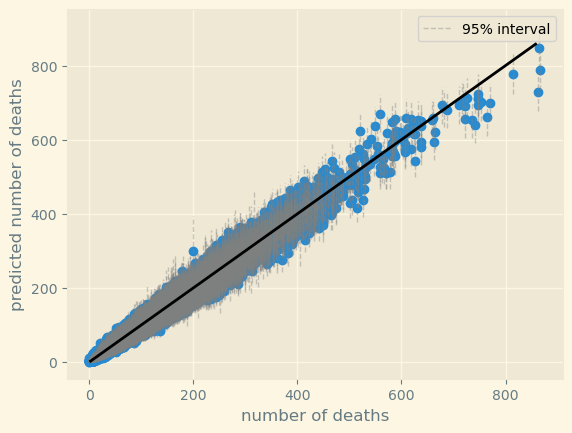
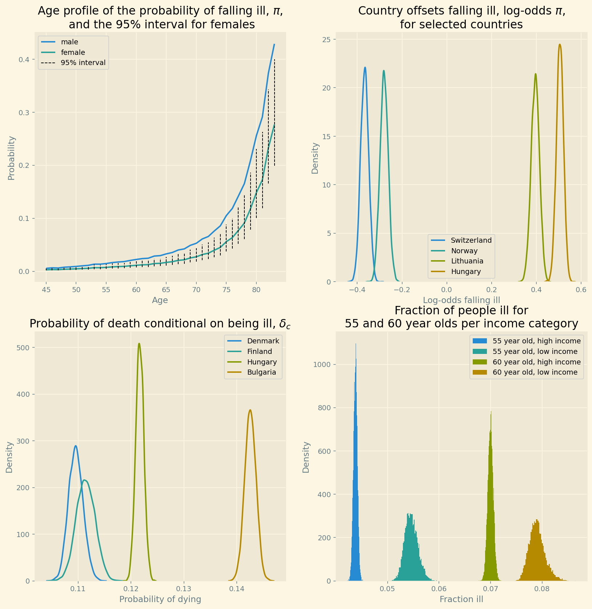
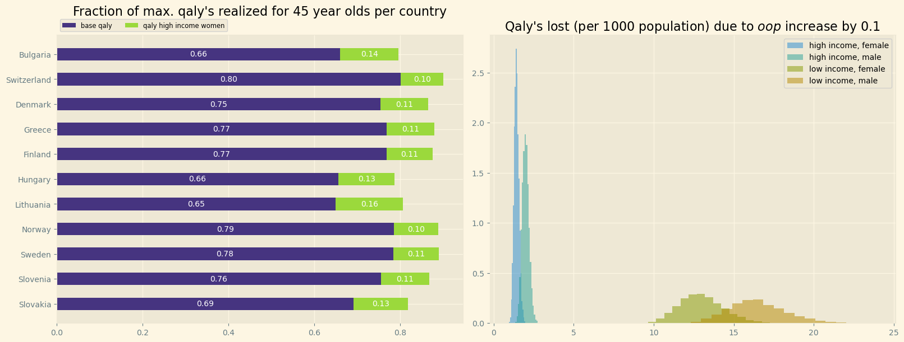
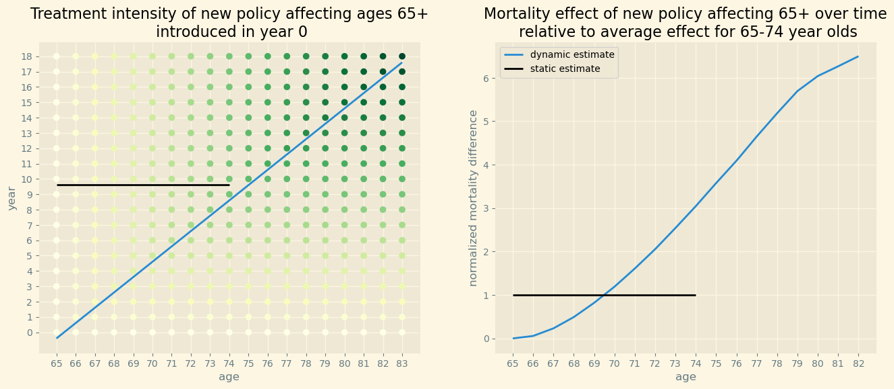
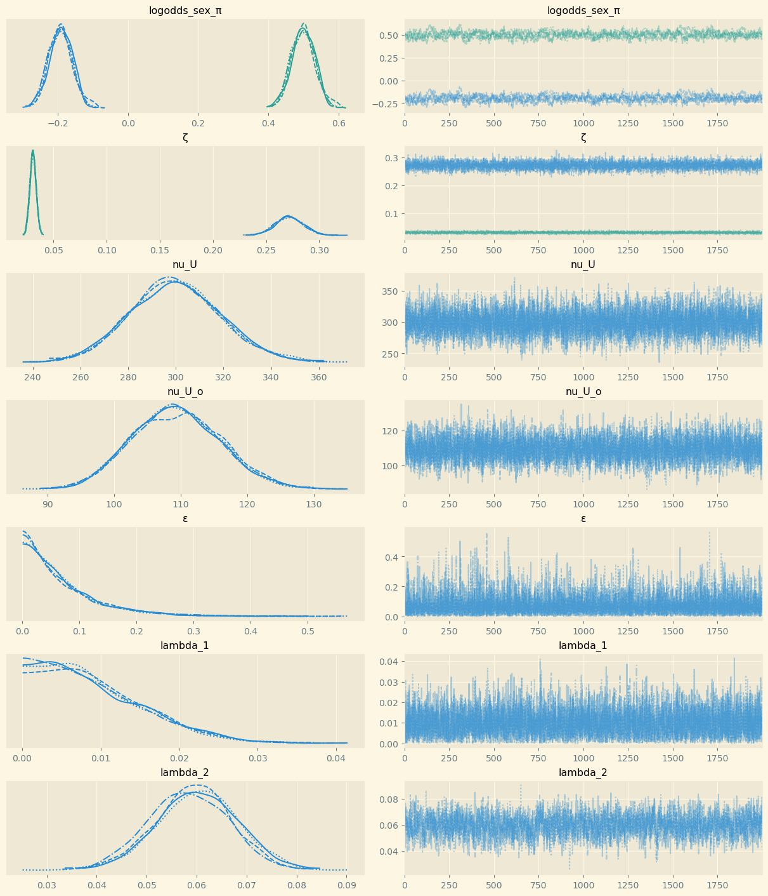

Dynamic effects of health insurance reform
Table of Contents
In order to find the long term mortality effects of health policy, we estimate a structural dynamic model following age cohorts over time. This allows us to follow the development in the fraction of people with low health status per category defined by region, age, gender and income. The fraction of people that are unhealthy/ill acts as a stock determining the long term effects of health policy. The model is estimated on regional (NUTS 2) Eurostat data and replicates stylized facts like women and people on high income have more quality adjusted life-years (qaly’s). Further, we show that an increase in demand-side cost-sharing does reduce qaly’s. In contrast to earlier papers, we find that the effect of cost-sharing on low incomes’ qaly’s is bigger than for high incomes. Our main finding is that the dynamic effect from following an age cohort from 45 till 84 is far bigger than a static estimate (like difference-in-differences or regression discontinuity design) of the mortality effect would suggest.
JEL codes: I11, I13, I18
Keywords: out-of-pocket payments, mortality, health insurance, poverty, unmet medical needs
How does this work? code
With this document, the reader can retrace the code which we use to produce the results, figures, tables etc. for this paper.
This file is written in Emacs org mode which allows us to combine text and code. The file is exported to pdf (via latex) and to html for the web-version. The web-version –which you are reading now– contains the sections tagged code which are not exported to the pdf version of the paper.
Here you can download the pdf of the paper.
For the export to html we use LaTeX.CSS with some small tweaks to make it compatible with the org-exporter that we use which is based on org-ref. The export of the org file to html is almost perfect, but some issues are not yet resolved. To illustrate, the html export has trouble with latex environments like align, split in equations etc. For the time being this is resolved by using multiple equation environments. Further, whereas latex drops the label on equations that are not cited, the html exporter is not able to do this. Hence, there are more numbered equations in the web-version of the paper. This is all a bit clumsy but otherwise works fine.
We use Python to program the model and PyMC for the Bayesian analysis. All these resources are open source and freely available. If you want to install Python, Anaconda is a good place to start.
To avoid replicating code that is used for different models, we use noweb. This is used as follows. First, we give the code block a name, like code-preamble. When we want to use this code, we call the code block by <<code-preamble>>.
There is a separate file which describes how we get the data from Eurostat.
The repository for the paper can be found here.
preamble code
######################################################### # This file is tangled from the index.org file in the root directory # the author runs the code from the index.org file directly in emacs # if you do not have emacs, you can run the code to generate the trace files # from this file # the file expects the following folder structure to run without problems: # the folder with the data should be located at: ./data/oop_health_data.nc # the trace files are written to ./trace # figures are written to ./figures #########################################################
import matplotlib.pyplot as plt plt.style.use('Solarize_Light2') import numpy as np from numpy.lib.stride_tricks import sliding_window_view import scipy as sc import pandas as pd import pymc as pm from pymc.model.transform.conditioning import do import arviz as az import pytensor import pytensor.tensor as pt import xarray as xr import seaborn as sns from tabulate import tabulate
We use the following versions of pymc and numpy:
print(pm.__version__) print(np.__version__)
5.19.1 1.26.4
loading data
In order to have sufficient data for all our variables we analyze data from 2008-2018. We start with the data from 2008-2020. In the code below we make some further selections like positive population levels and a population that exceeds the number of deaths in a category. At the time of our analysis this narrows down the years to 2008-2018. The categories we are analyzing are indexed by age/gender/region/income as explained below.
We analyze mortality for ages 45-85. At lower ages, mortality is very close to zero; for ages above 85 the number of observations per age group drops rapidly.
low_year = 2008 high_year = 2020 low_age = 45 high_age = 85 ds = xr.open_dataset('./data/oop_health_data.nc') ds
<xarray.Dataset> Size: 22MB
Dimensions: (nuts2: 313, year: 11, sex: 2, age: 99)
Coordinates:
* nuts2 (nuts2) <U4 5kB 'AT11' 'AT12' ... 'UKN0'
* year (year) int64 88B 2008 2009 ... 2017 2018
* sex (sex) <U1 8B 'F' 'M'
* age (age) float64 792B 1.0 2.0 ... 98.0 99.0
country (nuts2) <U14 18kB ...
Data variables:
population (age, sex, year, nuts2) float64 5MB ...
country_code (age, sex, year, nuts2) <U2 5MB ...
HF3_PC_CHE (age, sex, year, nuts2) float64 5MB ...
deaths (age, sex, year, nuts2) float64 5MB ...
percentage_material_deprivation (year, nuts2) float64 28kB ...
TOOEXP (year, nuts2) float64 28kB ...
UNMET (year, nuts2) float64 28kB ...
infant mortality (year, nuts2) float64 28kB ...
number_physicians per inhabitant (year, nuts2) float64 28kB ...
Following python code generates the list my_regions where we have data on population,deaths and where we have at least one year (per region) with information on UNMET or where UNMET is not equal to zero for all years.
# my_regions = [] # for r in np.unique(ds.nuts2.values): # A = np.sum(ds.where(ds.nuts2==r,drop=True).population.isnull().values) # B = np.sum(ds.where(ds.nuts2==r,drop=True).deaths.isnull().values) # C = np.sum(np.isnan(np.nanmean(ds.where(ds.nuts2==r,drop=True).UNMET.values,axis=0))) # D = np.sum(np.nanmean(ds.where(ds.nuts2==r,drop=True).UNMET.values,axis=0)==0) # if A + B + C + D == 0: # my_regions.append(r) # my_regions
cohorts = 30 age_matrix = sliding_window_view(np.arange(low_age,high_age+1), cohorts)[:-1] age_indices = age_matrix-low_age my_regions = ['BG31', 'BG32', 'BG33', 'BG34', 'BG41', 'BG42', 'CH01', 'CH02', 'CH03', 'CH04', 'CH05', 'CH06', 'CH07', 'DK01', 'DK02', 'DK03', 'DK04', 'DK05', 'EL30', 'EL41', 'EL42', 'EL43', 'EL51', 'EL52', 'EL53', 'EL54', 'EL61', 'EL62', 'EL63', 'EL64', 'EL65', 'FI1B', 'FI1C', 'FI1D', 'HU11', 'HU12', 'HU21', 'HU22', 'HU23', 'HU31', 'HU32', 'HU33', 'LT01', 'LT02', 'NO01', 'NO02', 'NO03', 'NO04', 'NO05', 'NO06', 'NO07', 'SE11', 'SE12', 'SE21', 'SE22', 'SE23', 'SE31', 'SE32', 'SE33', 'SI03', 'SI04', 'SK01', 'SK02', 'SK03', 'SK04'] ds = ds.where((low_age <= ds.age) & (ds.age <= high_age) &\ (low_year <= ds.year) & (ds.year <= high_year) &\ (ds.nuts2.isin(my_regions)) &\ (ds.country_code != "") &\ (ds.population > 1.0) & (ds.population > ds.deaths), drop=True) ds["TOOEXP"] = ds["TOOEXP"].isel(age=0,sex=0) ds["number_physicians"] = ds["number_physicians per inhabitant"].isel(age=0,sex=0) ds["infant mortality"] = ds["infant mortality"].isel(age=0,sex=0) ds["UNMET"] = ds["UNMET"].isel(age=0,sex=0) ds["UNMET_other"] = ds["UNMET"]-ds["TOOEXP"] ds["percentage_material_deprivation"] = ds["percentage_material_deprivation"].isel(age=0,sex=0) ds
<xarray.Dataset> Size: 2MB
Dimensions: (age: 41, sex: 2, year: 11, nuts2: 65)
Coordinates:
* nuts2 (nuts2) <U4 1kB 'BG31' 'BG32' ... 'SK04'
* year (year) int64 88B 2008 2009 ... 2017 2018
* sex (sex) <U1 8B 'F' 'M'
* age (age) float64 328B 45.0 46.0 ... 84.0 85.0
country (nuts2) <U14 4kB 'Bulgaria' ... 'Slovakia'
Data variables:
population (age, sex, year, nuts2) float64 469kB 5...
country_code (age, sex, year, nuts2) object 469kB 'B...
HF3_PC_CHE (age, sex, year, nuts2) float64 469kB n...
deaths (age, sex, year, nuts2) float64 469kB 1...
percentage_material_deprivation (year, nuts2) float64 6kB nan nan ... 10.0
TOOEXP (year, nuts2) float64 6kB 12.8 ... 0.4
UNMET (year, nuts2) float64 6kB 27.4 ... 6.5
infant mortality (year, nuts2) float64 6kB 9.1 8.0 ... 8.8
number_physicians per inhabitant (year, nuts2, age, sex) float64 469kB 3...
number_physicians (year, nuts2) float64 6kB 373.1 ... 344.6
UNMET_other (year, nuts2) float64 6kB 14.6 9.5 ... 6.1
The age_matrix defined above has the following format. In our first year, 2008, we start with people aged 45-74. We follow these age-cohorts over time till 2018 when they are aged 55-84. We summarize this in the paper in Table 1.
print(tabulate(age_matrix, tablefmt="orgtbl"))
| 45 | 46 | 47 | 48 | 49 | 50 | 51 | 52 | 53 | 54 | 55 | 56 | 57 | 58 | 59 | 60 | 61 | 62 | 63 | 64 | 65 | 66 | 67 | 68 | 69 | 70 | 71 | 72 | 73 | 74 | | 46 | 47 | 48 | 49 | 50 | 51 | 52 | 53 | 54 | 55 | 56 | 57 | 58 | 59 | 60 | 61 | 62 | 63 | 64 | 65 | 66 | 67 | 68 | 69 | 70 | 71 | 72 | 73 | 74 | 75 | | 47 | 48 | 49 | 50 | 51 | 52 | 53 | 54 | 55 | 56 | 57 | 58 | 59 | 60 | 61 | 62 | 63 | 64 | 65 | 66 | 67 | 68 | 69 | 70 | 71 | 72 | 73 | 74 | 75 | 76 | | 48 | 49 | 50 | 51 | 52 | 53 | 54 | 55 | 56 | 57 | 58 | 59 | 60 | 61 | 62 | 63 | 64 | 65 | 66 | 67 | 68 | 69 | 70 | 71 | 72 | 73 | 74 | 75 | 76 | 77 | | 49 | 50 | 51 | 52 | 53 | 54 | 55 | 56 | 57 | 58 | 59 | 60 | 61 | 62 | 63 | 64 | 65 | 66 | 67 | 68 | 69 | 70 | 71 | 72 | 73 | 74 | 75 | 76 | 77 | 78 | | 50 | 51 | 52 | 53 | 54 | 55 | 56 | 57 | 58 | 59 | 60 | 61 | 62 | 63 | 64 | 65 | 66 | 67 | 68 | 69 | 70 | 71 | 72 | 73 | 74 | 75 | 76 | 77 | 78 | 79 | | 51 | 52 | 53 | 54 | 55 | 56 | 57 | 58 | 59 | 60 | 61 | 62 | 63 | 64 | 65 | 66 | 67 | 68 | 69 | 70 | 71 | 72 | 73 | 74 | 75 | 76 | 77 | 78 | 79 | 80 | | 52 | 53 | 54 | 55 | 56 | 57 | 58 | 59 | 60 | 61 | 62 | 63 | 64 | 65 | 66 | 67 | 68 | 69 | 70 | 71 | 72 | 73 | 74 | 75 | 76 | 77 | 78 | 79 | 80 | 81 | | 53 | 54 | 55 | 56 | 57 | 58 | 59 | 60 | 61 | 62 | 63 | 64 | 65 | 66 | 67 | 68 | 69 | 70 | 71 | 72 | 73 | 74 | 75 | 76 | 77 | 78 | 79 | 80 | 81 | 82 | | 54 | 55 | 56 | 57 | 58 | 59 | 60 | 61 | 62 | 63 | 64 | 65 | 66 | 67 | 68 | 69 | 70 | 71 | 72 | 73 | 74 | 75 | 76 | 77 | 78 | 79 | 80 | 81 | 82 | 83 | | 55 | 56 | 57 | 58 | 59 | 60 | 61 | 62 | 63 | 64 | 65 | 66 | 67 | 68 | 69 | 70 | 71 | 72 | 73 | 74 | 75 | 76 | 77 | 78 | 79 | 80 | 81 | 82 | 83 | 84 |
country = ds.country.values n_regions = ds.nuts2.values.shape[0] # number of regions n_countries = len(np.unique(ds.country.values)) # number of countries n_ages = ds.age.values.shape[0] # number of ages # Mapping of regions to countries # Example: regions 0, 1 -> country 0; regions 2, 3 -> country 1; regions 4, 5 -> country 2 region_to_country = pd.factorize(country)[0] # Create the matrix (countries x regions) country_region_matrix_01 = np.zeros((n_countries, n_regions)) # 0-1 matrix with a 1 at position cr if region r belongs to country c for r,c in enumerate(region_to_country): country_region_matrix_01[c, r] = 1 # Normalize rows to compute averages per country (across regions) country_region_matrix = country_region_matrix_01 / country_region_matrix_01.sum(axis=1, keepdims=True)
For some country/year combinations we see in the data that OOP (HF3_PC_CHE) equals zero. As in no European country healthcare is completely free, we interpret 0 as a missing observation. With xarray we can turn a 0 into nan by setting da = da.where(da != 0) where da denotes the data array. This is the code we use below for OOP, infant mortality and Unmet. No infant mortality in a region or no unmet medical needs is also highly unlikely; hence a zero value is turned into nan. If Unmet equals zero, the same is true for UNMET_other and TooExp because UNMET = TooExp + UNMET_other.
OOP does not vary with age or gender and hence we can take the average across dimensions (0,1) without losing information. The result is a variable varying over years and across regions. But out-of-pocket varies by country (not by region within a country) and hence we multiply OOP with the country_region_matrix (transformed). This makes sure that OOP_c varies by year and country.
In our empirical analysis we use the standardized version of the number of physicians per 100k inhabitants. Variables like OOP, material deprivation and unmet medical needs are turned from percentages into fractions for the analysis. We also turn infant mortality (per 1000 life-births) into a variable between 0 and 1 by dividing it by 100 (effectively making it infant mortality per 100k life-births).
Population = ds.population.values.astype(int) physicians = (ds.number_physicians.values-np.nanmean(ds.number_physicians.values))/np.nanstd(ds.number_physicians.values) OOP = ds.HF3_PC_CHE.where(ds.HF3_PC_CHE!=0)/100.0 # replaces OOP equal to 0 with nan m_infant = ds['infant mortality'].where(ds['infant mortality']!=0)/100.0 # replaces infant mortality equal to 0 with nan OOP_c = np.dot(OOP.mean(axis=(0,1)),country_region_matrix.T) M = ds.deaths.values.astype(int) Deprivation = ds.percentage_material_deprivation/100.0 Unmet = ds.UNMET.where(ds.UNMET!=0)/100.0 # replaces UNMET equal to 0 with nan TooExp = ds.TOOEXP.where(ds.UNMET!=0)/100.0 Unmet_o = ds.UNMET_other.where(ds.UNMET!=0)/100.0 U_log_odds = np.log((Unmet)/(1-Unmet)) U_o_log_odds = np.log((Unmet_o)/(1-Unmet_o))
creating cohort data
We analyze population and mortality in tensor-format. The dimensions of the tensors P_cohort, M_cohort are calendar year, cohort size (first row in Table 1), gender and region.
c_dim, g_dim, t_dim, r_dim = cohorts, 2, len(ds.year), n_regions n_dim = n_countries P_cohort = np.zeros((t_dim, c_dim, g_dim, r_dim)) M_cohort = np.zeros((t_dim, c_dim, g_dim, r_dim)) for offset in range(c_dim): for g in range(g_dim): for r in range(r_dim): P_cohort[:,offset,g,r] = np.diagonal(Population, axis1=0, axis2=2, offset=-offset)[g,r,:] M_cohort[:,offset,g,r] = np.diagonal(M, axis1=0, axis2=2, offset=-offset)[g,r,:]
We use the following moments to specify our priors for missing values in these variables. To deal with missing values in Deprivation we model it as a distribution from which we draw missing values. Such a distribution cannot have a standard deviation of zero and hence we add a small number to the standard deviation to avoid this. See section for a discussion of missing values.
There are four regions in Norway on which we have no information at all about the number of physicians. For these regions we set mean_physician equal to the average number of physicians in Norway and std_physician equal to the average standard deviation for Norway.
Finally, to define the log-odds of mortality (number of deaths M over population P) we add 1 to M to avoid taking the logarithm of zero.
mean_depr = Deprivation.mean(axis=(0)).values std_depr = Deprivation.std(axis=(0)).values + 0.0001 mean_oop_c = np.nanmean(OOP_c,axis=0) std_oop_c = np.nanstd(OOP_c,axis=0) mean_m_infant = np.nanmean(m_infant,axis=0) std_m_infant = np.nanstd(m_infant,axis=0) mean_physician = np.nanmean(physicians,axis=0) # mean over years std_physician = np.nanstd(physicians,axis=0) # std over years norway = ['NO' in r for r in ds.nuts2.values] mean_norway = np.nanmean(mean_physician[norway]) mean_physician = np.nan_to_num(mean_physician,nan=mean_norway) std_norway = np.nanmean(std_physician[norway]) std_physician = np.nan_to_num(std_physician,nan=std_norway) log_odds_mort = np.log(((1+M)/Population)/(1-((1+M)/Population))) mort_c = np.log(np.tensordot(((1+M_cohort)/P_cohort), country_region_matrix.T, axes=([3],[0]))/(1- np.tensordot(((1+M_cohort)/P_cohort),\ country_region_matrix.T, axes=([3],[0])))) # varies by age, cohorts, gender, country gender_effect_π = (mort_c.mean(axis=(0,1,3))-mort_c.mean(axis=(0,1,2,3))) # varies by gender country_effect_π = (mort_c.mean(axis=(0,1,2))-mort_c.mean(axis=(0,1,2,3))) # varies by country
1. Introduction
Healthcare policy is long run policy. Policy reforms can affect a population’s health in 20 years time. A recent literature analyzes the health effects of demand-side cost-sharing where health is proxied by mortality. To identify the causal effect of demand-side cost-sharing on mortality, these papers focus on a narrow band of years and/or ages around a change in cost-sharing. To illustrate, a number of studies use the Medicaid eligibility expansion under the Affordable Care Act (Borgschulte and Vogler 2020; Miller, Johnson, and Wherry 2021). As this was implemented over time in a number of states, a difference in differences (diff-in-diff) analysis can be used to identify the causal effect. To facilitate the identification only a few years after the policy change are analyzed making it hard to understand long run effects.
We introduce a simple dynamic health model that allows us to follow a cohort from age 45 to 84. The idea is to capture a “health stock” by distinguishing people with high and low health status. We keep track of health status at the age/gender/income/year/region level. That is, we follow the health status of an age category (per gender/income/region) over time as the cohort gets older. For the healthy group there is a probability of falling ill. For the low health status group there are a probability to recover and a probability to die. The recovery probability depends on the probability of getting treatment which in turn depends on the degree of demand-side cost-sharing. With higher out-of-pocket expenditure, fewer people can afford treatment and recovery is less likely.
In such a theoretical model it is straightforward to choose parameter values such that the dynamic effect is far bigger than a static diff-in-diff estimate would suggest. In order to evaluate this difference for reasonably realistic parameter values, we estimate our model on regional (NUTS 2) Eurostat data over an eleven year period. The model allows us to derive the effect of demand-side cost-sharing on mortality and quality adjusted life years (so called qaly’s) which give a higher weight to years in full health than years with low health status.
Our estimated model fits the data well and replicates a number of stylized facts. Women expect more qaly’s than men and people on high income more than people in poverty. The probability of falling ill increases with age. Although there is uncertainty about the parameter estimates, there is an unambiguous ordering of countries in terms of expected qaly’s for 45 year olds; Switzerland has the highest expected qaly’s and Hungary, Bulgaria and Lithuania the lowest. Finally, a 10% point increase in demand-side cost-sharing (that is, in the percentage of out-of-pocket over total healthcare expenditure) reduces qaly’s: the average effect is moderate but clearly bounded away from zero.
Two results stand out compared to the literature discussed below. First, the effect of a change in demand-side cost-sharing on low income qaly’s is ten times the effect on high income qaly’s. Second, the dynamic effects of demand-side cost-sharing for low incomes are twenty times higher than the static estimate that would follow from a diff-in-diff analysis for this group. The latter result suggests a trade off between a clear-cut causal identification –based on, say a diff-in-diff methodology– and a long run effect estimate –if one is willing to put more structure on the data.
We estimate the model as a Bayesian model to easily propagate the uncertainty of the estimated parameters to the results that we present, e.g. in terms of qaly’s.
This paper is not the first to examine the impact of demand-side cost-sharing on mortality. There is a collection of recent studies employing innovative methodologies and primarily relying on individual-level data to establish the causal effect of health insurance on health and mortality. Several studies have utilized the Medicaid eligibility expansion under the Affordable Care Act. This expansion was implemented at various times across different states in the US, enabling a diff-in-diff identification strategy. These studies have demonstrated that the Medicaid expansion (resulting in more comprehensive health insurance coverage) has led to a reduction in mortality rates (Borgschulte and Vogler 2020; Miller, Johnson, and Wherry 2021).
However, these studies focus on the static or short run effects of insurance and demand-side cost-sharing. To illustrate, Borgschulte and Vogler (2020) consider a four year period after the Medicaid reform and do not try to identify the dynamic effect. Miller, Johnson, and Wherry (2021) focuses on 55-64 year olds up to three years after the Medicaid reform.
Chandra, Flack, and Obermeyer (2021) analyze the Medicare Part D prescription drug coverage, in which end-of-year pricing displays a non-linear pattern based on expenditure. The primary finding indicates that increases in out-of-pocket (oop) costs for drugs result in reduced drug use, including the use of high-value treatments, subsequently leading to higher mortality rates. There is no dynamic analysis in the sense that the paper only considers 65 year olds and focuses on within year effects.
Finally, Goldin and colleagues conducted an experimental study in which individuals subject to the Affordable Care Act’s health insurance mandate were reminded of potential financial penalties for non-compliance. This reminder prompted individuals to opt for health insurance instead of remaining uninsured, and as a result, mortality rates were lower among those who received the reminder compared to the control group who did not (Goldin, Lurie, and McCubbin 2020). This paper analyzes a two year period and focuses on 45-64 year olds, whereas our paper derives effects across 45-84 year olds.
Our paper adds to this evidence of negative health effects of demand-side cost-sharing in the following dimensions. First, we utilize European instead of US data. European countries tend to have a more homogeneous health insurance system compared to the diverse range of options available within the US. In the US, individuals may have (very generous) employer-sponsored insurance, Medicaid or Medicare coverage, or no insurance at all, making it challenging to detect aggregate-level effects of changes in say, Medicaid coverage. European countries, in contrast, tend to have nationally determined health insurance features, resulting in a higher level of consistency. For instance, the OECD Health Systems Characteristics Survey shows that more than 90% of the population in European countries obtains primary healthcare coverage through automatic or compulsory insurance, with percentages exceeding 99% in most cases. The corresponding figure for the US is less than one third. In this sense, country or region-wide statistics in Europe provide a better representation of the insurance situation for citizens compared to the US, although they may not capture all individual nuances such as the purchase of complementary insurance.
With this data we follow an age/gender/income/region cohort over time and estimate the model parameters capturing the probabilities of falling ill, of recovering from illness and death. Then we can simulate the long term effects of a change in demand-side cost-sharing using our estimated parameters. Using this simulated data we can compare our dynamic results with the static (diff-in-diff) estimates. We find that the (true) dynamic effects are magnitudes higher for low incomes than the static estimates would suggest. We illustrate this by using the estimation method in Finkelstein and McKnight (2008) to explain the difference in detail.
Our finding that demand-side cost-sharing affects health and mortality of people on low income aligns with previous research indicating that healthcare utilization is influenced by individuals’ liquidity constraints. Individuals with lower incomes tend to defer or forgo valuable treatments when these are expensive (Gross, Layton, and Prinz 2020; Nyman 2003). Individuals with higher incomes may also forgo necessary treatments (Brot-Goldberg et al. 2017; Chandra, Flack, and Obermeyer 2021). However, in the latter case, the decision to forgo treatment is more likely driven by factors other than liquidity issues and we find a far smaller effect.
Further, Eurostat variables derived from the EU-SILC survey enable us to concentrate on causal mechanisms. The survey includes questions about unmet medical needs in the past months and the reasons for these unmet needs. One of the reasons cited is the out-of-pocket cost, which leads individuals to postpone or forgo treatment because it is too expensive.
The next section presents a dynamic model of health status and mortality. Then we describe the Eurostat data that we use. We explain the empirical model that we estimate. Estimation results are presented and we conclude with a discussion of the policy implications. The appendix contains more details on our data and estimation. The online appenix is the html version of this paper which includes –per section– the python code that is used in each section’s analysis.1 This is an advantage of using data at the regional level. The repository contains the python code that gets the data from Eurostat so that each step of this analysis can be replicated.
2. Theory
The idea of our dynamic model is to follow a cohort aged \(a\) at time \(t\) over time to age \(a+1\) in year \(t+1\). We capture this dynamic with a straightforward Markov model. The model that we estimate is illustrated in Figure 1. We follow individuals from age 45 to age 85. Let’s denote the age at which we start following an individual by \(a=0\) at time \(t=0\). If this agent is healthy, there is a probability \(\pi\) that the agent falls ill and moves to state ill at age \(a=1\) in period \(t=1\). With probability \(1-\pi\) the agent stays healthy also at age \(a=1\). For an agent in the unhealthy state, there is a probability \(\sigma\) that she is cured and becomes healthy at age \(a=1\). With probability \(\delta\) she dies and with probability \(1-\sigma-\delta\) she remains in the unhealthy state at \(a=1\). Finally, death is an absorbing state.
Figure 1: Markov chain model
Instead of deriving the steady state outcome of the model, we estimate parameters using the underlying difference equation. Focusing just on age for the moment to ease notation, the model implies the following difference equation. Let \(\iota_a\) denote the fraction of people aged \(a\) who are ill and \(1-\iota_a\) the fraction who are healthy, then \(\iota_a\) evolves over age (and time) as:
\begin{equation} \label{orgf4836a1} \iota_{a+1} = ((1-\sigma-\delta) \iota_a + \pi_a (1-\iota_a))/(1-\delta \iota_{a}) \end{equation}and \(\delta \iota_a\) people die at age \(a\). In words, the fraction of people ill aged \(a+1\) equals the fraction ill aged \(a\) who do neither recover to the healthy state nor die plus the fraction of healthy people who fall ill. We normalize by \(1-\delta \iota_a\) to ensure that the fractions ill and healthy add up to one.
We differentiate the fraction ill, \(\iota_a\), by region/year/gender/income. If we add all the sub/superscripts we get \(\iota_{atr}^{ij}\) for age \(a\) in year \(t\) and region \(r\) among gender \(i \in \{f,m\}\) and low/high income \(j \in \{l,h\}\). Let \(\alpha_{tr}\) denote the fraction of people on low income in region \(r\) and year \(t\) which is available in our data. We observe in our data mortality \(\mu_{atr}^{i}\), the fraction of females/males \(i\) who die at age \(a\) in year \(t\) in region \(r\). In terms of our model this is given by
\begin{equation} \label{orgf2418dd} \mu_{atr}^i = \alpha_{tr} \delta \iota_{atr}^{il} + (1-\alpha_{tr}) \delta \iota_{atr}^{ih} \end{equation}As we do not observe \(\iota\) directly in our data, we have to estimate the starting points of the fraction of people initially ill, \(\iota_0\), in order to solve the difference equations over time. Our estimates of \(\iota_0\) vary by age/gender/region/income. The reason \(\iota_0\) varies by age is illustrated in Table 1. Differentiated by gender/region/income we follow the cohorts aged 45-74 over time until they are aged 55-84. The data section below motivates this choice. Hence we estimate the initial values \(\iota_0\) for these ages in the year 2008. Then we apply equation \eqref{orgf4836a1} to determine the development of \(\iota_a\) over time as cohorts get older.
| year | age | |||||||||||
|---|---|---|---|---|---|---|---|---|---|---|---|---|
| 2008 | 45 | 46 | 47 | 48 | … | 68 | 69 | 70 | 71 | 72 | 73 | 74 |
| 2009 | 46 | 47 | 48 | 49 | … | 69 | 70 | 71 | 72 | 73 | 74 | 75 |
| 2010 | 47 | 48 | 49 | 50 | … | 70 | 71 | 72 | 73 | 74 | 75 | 76 |
| 2011 | 48 | 49 | 50 | 51 | … | 71 | 72 | 73 | 74 | 75 | 76 | 77 |
| 2012 | 49 | 50 | 51 | 52 | … | 72 | 73 | 74 | 75 | 76 | 77 | 78 |
| 2013 | 50 | 51 | 52 | 53 | … | 73 | 74 | 75 | 76 | 77 | 78 | 79 |
| 2014 | 51 | 52 | 53 | 54 | … | 74 | 75 | 76 | 77 | 78 | 79 | 80 |
| 2015 | 52 | 53 | 54 | 55 | … | 75 | 76 | 77 | 78 | 79 | 80 | 81 |
| 2016 | 53 | 54 | 55 | 56 | … | 76 | 77 | 78 | 79 | 80 | 81 | 82 |
| 2017 | 54 | 55 | 56 | 57 | … | 77 | 78 | 79 | 80 | 81 | 82 | 83 |
| 2018 | 55 | 56 | 57 | 58 | … | 78 | 79 | 80 | 81 | 82 | 83 | 84 |
The remainder of the section explains how \(\pi,\delta,\sigma\) vary with age/year/gender/region/income. First, the probability of falling ill \(\pi\) varies by age/gender/country/income. We know that older people tend to be less healthy than young people, women tend to live longer than men, longevity varies by country and people on low income tend to have lower health status than people on high income. We allow \(\pi\) to vary along these dimensions to capture these stylized facts.
Second, once people are in state “ill” we assume that their probability of death \(\delta\) is the same across age/gender/income. We do allow \(\delta_c\) to vary by country as some healthcare systems may be better in prolonging life for the ill than systems in other countries.
A final source of variation is the probability \(\sigma\) with which people recover to full health. This probability \(\sigma\) is determined by the probability of treatment and the quality of treatment conditional on being treated. We have data on unmet medical needs. Reasons why people forgo treatment –that would be beneficial– include waiting lists, hospital too far away, afraid of treatment. The motivation that we focus on is that the treatment is skipped because it is too expensive. Let \(\upsilon \in [0,1]\) denote the fraction of people who have unmet medical needs. We write this as the sum of the fraction of people who indicate that treatment is too expensive, \(\tau\), and the fraction of people who give other reasons, \(\upsilon_0\).
\begin{equation} \label{org3200068} \upsilon = \upsilon_0 + \tau \end{equation}We expect that \(\tau\) is increasing in the fraction of healthcare expenditures that people pay out-of-pocket, \(oop\).
\begin{equation} \label{orgff29c47} \tau = \zeta oop \end{equation}where \(oop\) is measured as expenditure paid out-of-pocket over total healthcare expenditure. We interpret this as capturing the generosity of a country’s health insurance system. If healthcare is completely free at point-of-service, \(oop=0\) and \(\tau=0\): with free healthcare, no one forgoes treatment because it is too expensive. At the other extreme, no health insurance at all: everything is paid out-of-pocket: \(oop=1\). Then a fraction \(\zeta \in [0,1]\) will indicate they forgo treatment because it is too expensive. We allow \(\zeta\) to depend on income with \(\zeta^l \geq \zeta^h\). We expect people on low income to react more strongly to an increase in \(oop\) than people on high income. Also people on low income are more likely to avoid treatment for other reasons: \(\upsilon_0^l \geq u_0^h\). To illustrate, people on low income may be less skilled, say, in navigating waiting lists or find it more difficult to travel to a hospital that is further away (or even abroad).
If someone gets treatment, the probability of recovering to full health is given by \(\lambda\). Hence, we write the probability of recovery \(\sigma\) as
\begin{equation} \label{org4ff0a92} \sigma = \sigma_0 + \lambda (1-\upsilon) \end{equation}where \(\sigma_0\) is the probability that someone recovers without treatment. The parameter \(\lambda\) captures the quality of care which we allow to vary by region and year in ways explained below.
We consider two applications of our model. First, we calculate the expected quality adjusted life-years (qaly’s) of 45 year olds till they are 85. We normalize the value of a life-year in full health to 1.0 and set the qaly for a year being ill equal to \(\theta \in \langle 0, 1]\). The value of a “life-year when dead” is normalized to 0.0. To make this qaly calculation, we keep track of the size of the groups healthy and ill as follows:
\begin{equation} \label{orgc642e2c} N^{healthy}_{a+1} = (1-\pi_a) N^{healthy}_a + \sigma N^{ill}_{a} \end{equation}and
\begin{equation} \label{org82d44b8} N^{ill}_{a+1} = \pi_a N^{healthy}_{a} + (1-\sigma-\delta) N^{ill}_{a} \end{equation}where we start with 45 year olds at \(a=0\) and calculate up to age \(A\) (corresponding to 85 year olds). In contrast to equation \eqref{orgf4836a1} we do not assume that \(N^{ill}_a + N^{healthy}_a = 1\); indeed, the point is that we lose life-years as age increases. As above \(N^{healthy}_{a},N^{ill}_{a},\pi_a,\sigma,\delta\) vary with gender/region/income.
We then calculate expected quality adjusted life-years from age 1 to \(A\) as the undiscounted sum of qaly’s:2
\begin{equation} \label{orgba2b729} Q = \sum_{a=1}^{A} N^{healthy}_a + \theta N^{ill}_{a} \end{equation}Second, we consider the effect on qaly’s of an increase in demand-side cost-sharing \(\Delta oop > 0\). For this, we calculate qaly’s in the baseline outcome, \(Q_0\) and compare it with the outcome where the fraction of people with unmet medical needs increases with \(\Delta \upsilon = \zeta \Delta oop\). We denote the qaly’s in this outcome by \(Q_1\). The loss of qaly’s due to increased demand-side cost-sharing is given by:
\begin{equation} \label{org27bd9bf} \Delta Q = Q_0 - Q_1 \end{equation}In words, suppose there was a reform in year \(t=0\) which increased \(oop\). After the reform we follow the cohort aged \(a=0\) over time till age \(a=A\) and calculate their qaly’s, \(Q_1\). We compare these qaly’s with the counterfactual where \(oop\) was not changed, \(Q_0\). We denote this the dynamic comparison.
We compare this dynamic analysis with the following static one. Instead of following an age cohort over \(A\) calendar years, we consider \(A\) ages one period after the reform and denote their qaly’s by \(\tilde Q_1\). That is, the equation for \(\tilde Q\) is comparable to \eqref{orgba2b729} except that in the latter both age \(a\) and calendar year \(t\) vary over the summation. With \(\tilde Q\) calendar year is fixed at \(t=1\) (with the reform happening in calendar year \(t=0\)). We then compare \(\tilde Q_1\) with the qaly’s these \(A\) age groups would have received under the counterfactual where \(oop\) is unchanged, \(\tilde Q_0\).
To illustrate with Table 1: we start with ages 45-74 at \(t=0\). We have the reform and calculate \(\tilde Q_1\) for the second row in the table (ages 46-75). Then we compare this to qaly’s for the second row under the counterfactual of no change in \(oop\). We argue that this captures the estimate made by an event study like a diff-in-diff analysis, say where the reform was introduced in one region but not in another region. The diff-in-diff approach would then control for year effects like a virus going around in the year after the reform.
This type of analysis can identify the causal effect convincingly but is usually applied for a couple of years only. For instance, because in later years the reform is introduced in other regions as well. Or because over time other factors may change causing a bias in the estimates based on the comparison of the regions.
Theoretically, it is plausible that the dynamic estimate exceeds the static one. In a model where stocks (of healthy and ill) determine the state of the system and its development over time, ignoring these dynamic effects is likely to cause an under-estimation of the effect on qaly’s or mortality. With our estimated model we can quantify the difference between the static and dynamic estimates.
2.1. Markov chain graph code
digraph ER {
fontname="Helvetica,Arial,sans-serif"
node [fontname="Helvetica,Arial,sans-serif" fontsize="16"]
edge [fontname="Helvetica,Arial,sans-serif" fontsize="16"]
layout=sfdp
node [shape=ellipse]; a; b; death;
a [label="healthy"]
b [label="ill"]
a -> b [label="π\n",len=0.500];
b -> a [label=" σ",len=0.500];
b -> death [label="δ\n",len=0.00];
}
3. Data
The data that we use is from Eurostat’s regional database and provides for NUTS 2 regions population size and number of deaths per age/gender category. In principle, we have data on 11 countries and 65 regions for the 11 years 2008-2018 and ages 45-84 for women and men. The years 2008-2018 were chosen because, at the time of the analysis, for most variables and regions data was available from 2008 onward till 2018. The age range was chosen with the idea that mortality starts to increase from 45 years onward and number of observations per region drop significantly from age 85 onward. Finally, NUTS 2 regions were selected where there was at least one observation for unmet medical needs over the years and where the number of deaths during the year does not exceed the population size at the start of the year.
Table 2 shows the summary statistics for our variables. We briefly discuss the main variables, the appendix provides more detail. We have more than 40k observations for population and deaths per age/gender/year/region category.3 We have missing observations and explain below how we deal with these in our Bayesian setting.
The average population size per region-age-gender category is about 6000 and the average number of deaths 90. Median population size per category equals 5300 and median number of deaths 62. In our data, the percentage of people dying in a NUTS 2/year/age/gender category (mortality) equals 2% on average with a maximum of 17.3% for some region and age combination. The material deprivation measure (denoted deprivation) comes from the EU statistics on income and living conditions (EU-SILC) survey. It refers to the enforced inability to pay unexpected expenses, afford adequate heating of the home, durable goods like a washing machine etc. This variable captures the idea that people may feel forced to forgo (valuable) treatment because it is too expensive.4 The mean deprivation rate across regions and years equals 10%. Some regions have (almost) no people in deprivation, while in others 55% of people live in deprivation. The median rate is around 3%.
Also from the EU-SILC survey, we use the variable capturing unmet medical needs because the forgone treatment was too expensive (too exp). The variable unmet measures percentage of people in need of healthcare that postpone or forgo treatment because it is either too expensive, the hospital is too far away, there is a waiting list for the treatment, the patient hopes that symptoms will disappear without treatment, the patient is afraid of treatment or has no time to visit a physician. The mean fraction of people forgoing treatment because it is too expensive equals 1.5%, while the mean fraction of people with unmet medical needs (because it is too expensive or other reasons) equals 6.5%. In some regions the fraction of people forgoing treatment because it is too expensive goes up to almost 20% and the fraction of people with unmet medical needs to almost 30%.
For the model application considering the effect of demand-side cost-sharing on health and mortality, healthcare quality could be a collider. Indeed, if government resources are reduced, there could be both an increase in out-of-pocket payments and a reduction in healthcare quality (by reducing investments in technology and/or reducing the number of physicians). This reduction in quality would also affect health and mortality thereby confounding the healthcare demand effect of out-of-pocket spending. We use two variables to control for the quality of care. First, infant mortality is a well known measure for the quality of a healthcare system. Moreover, infant mortality is not directly related to our measure of mortality which starts at age 45. On average there are almost four dead infants (younger than one year of age at death) per 1000 live births. But for some regions this almost reaches 16 per 1000 live births. The second quality measure is the number of physicians per 100k inhabitants. On average there are 380 physicians per 100k inhabitants but this varies between regions from 180 to 800. We view this as an approximate measure of resources available for healthcare in a region. Finally, we use the fraction of healthcare expenditure paid out-of-pocket as a signal of how generous health insurance is. This captures country wide policy. On average people pay a bit more than 20% out-of-pocket but this varies from 12% in some countries to more than 40% in others.
| count | mean | std | min | median | max | |
|---|---|---|---|---|---|---|
| population | 42900 | 5961.0 | 3788.7 | 574.0 | 5286.0 | 30491.0 |
| deaths | 42900 | 88.9 | 83.7 | 0 | 62.0 | 867.0 |
| mortality (%) | 42900 | 1.8 | 1.9 | 0 | 1.2 | 17.3 |
| deprivation (%) | 481 | 9.9 | 13.3 | 0 | 2.8 | 55.2 |
| too expensive (%) | 527 | 1.5 | 2.6 | 0 | 0.5 | 18.4 |
| unmet (%) | 527 | 6.4 | 4.6 | 0.7 | 5.1 | 28.1 |
| infant mortality (\textperthousand) | 705 | 3.8 | 2 | 0.8 | 3.4 | 15.8 |
| physicians per 100k inhab. | 594 | 379.4 | 108.6 | 180 | 363.3 | 807.9 |
| out-of-pocket (%) | 55 | 22.8 | 9.5 | 12.0 | 18.9 | 43.2 |
3.1. data code
The following python code generates Table 2 with summary statistics. The noweb notation <<code-preamble>> runs the code from Listing 2 into the python cell without using copy/paste.
<<code-preamble>> <<code-data>> <<code-selection>> stat_list = [] def summary_statistics(var,name,stat_list=stat_list): return stat_list.append([name,np.sum(~np.isnan(var)),np.nanmean(var).round(decimals=1),np.nanstd(var).round(decimals=1),np.nanmin(var).round(decimals=1),np.nanmedian(var).round(decimals=1),np.nanmax(var).round(decimals=1)]) summary_statistics(P_cohort,'population') summary_statistics(M_cohort,'deaths') summary_statistics(M_cohort/P_cohort*100,'mortality (%)') variables = [Deprivation.values*100,TooExp.values*100,Unmet.values*100,m_infant.values*100,ds.number_physicians.values,OOP_c*100] names = ['deprivation (%)', 'too expensive (%)','unmet (%)','infant mortality (\\textperthousand)','physicians per 100k inhab.','out-of-pocket (%)'] for i in range(len(variables)): summary_statistics(variables[i],names[i]) df = pd.DataFrame(stat_list,columns= ['','count','mean','std','min','median','max']) headers = ['count','mean','std','min','median','max'] print(tabulate(df,headers,tablefmt="orgtbl",\ colalign=("left","left", "right", "right", "right", "right", "right", "right")))
| | | count | mean | std | min | median | max | |----+-------------------------------------+---------+--------+--------+-------+----------+-------| | 0 | population | 42900 | 5961 | 3788.7 | 574 | 5286 | 30491 | | 1 | deaths | 42900 | 88.9 | 83.7 | 0 | 62 | 867 | | 2 | mortality (%) | 42900 | 1.8 | 1.9 | 0 | 1.2 | 17.3 | | 3 | deprivation (%) | 481 | 9.9 | 13.3 | 0 | 2.8 | 55.2 | | 4 | too expensive (%) | 527 | 1.5 | 2.6 | 0 | 0.5 | 18.4 | | 5 | unmet (%) | 527 | 6.4 | 4.6 | 0.7 | 5.1 | 28.1 | | 6 | infant mortality (\textperthousand) | 705 | 3.8 | 2 | 0.8 | 3.4 | 15.8 | | 7 | physicians per 100k inhab. | 594 | 379.4 | 108.6 | 180 | 363.3 | 807.9 | | 8 | out-of-pocket (%) | 55 | 22.8 | 9.5 | 12 | 18.9 | 43.2 |
4. Estimation
We estimate the model using Bayesian methods. Here we present the equations of the model. The online appendix contains the details on the choice of priors and the pymc code of the model. Further, we explain how the Bayesian algorithm deals with missing observations.
We present the model in reverse order. We observe the number of deaths \(m\) and the population size \(n\) per age/gender/region/year dimensions. We model the probability of death \(\mu\) and \(m\) has a Binomial distribution:
\begin{equation} \label{orgce3324e} m_{atr}^{i} = Binomial(n_{atr}^{i},\mu_{atr}^{i}) \end{equation}where \(\mu_{atr}^i\) is given by equation \eqref{orgf2418dd}. Poverty \(\alpha_{tr}\) per region and time period is observed in the data using the material deprivation measure discussed in the previous section. The fraction of people ill \(\iota_{atr}^{ij}\) varies by age \(a\), gender \(i\), time \(t\), region \(r\) and income level \(j\). This fraction \(\iota\) follows from difference equation \eqref{orgf4836a1}. Before we explain how this equation is estimated, recall that the estimate of \(\delta_{c}\) is allowed to vary by country \(c\).
To solve differential equation \eqref{orgf4836a1}, we start by estimating the initial condition \(\iota_{a0r}^{ij}\) for ages \(a=0-30\) (i.e. ages 45-74) in year \(t=0\) (2008) per region \(r\), gender \(i\) and income category \(j\).
Next, we need to estimate the probability of falling ill \(\pi_{ar}^{ij}\) which we assume to be additive in age, region, gender and income fixed effects in log-odds space. That is we add together the log-odds effects for age, gender, region and income and apply the inverse logit function \(e^x/(1+e^x)\) to the sum of these log-odds. This gives the probabilities \(\pi_{ar}^{ij} \in \langle 0,1 \rangle\).
The probability \(\sigma = \sigma_0 + \lambda (1-\upsilon)\) of recovering to full health in equation \eqref{org4ff0a92} is estimated as follows. We estimate the probability \(\sigma_0 \in \langle 0,1 \rangle\) of recovering to health without medical intervention. Further, we observe the fraction of people who indicate that they have unmet medical needs \(\upsilon_{tr}\) at the year/region level. For the ill who do get treatment, \(1-\upsilon\), there is a probability \(\lambda\) of full recovery. The logg-odds of \(\lambda\) are the sum of three effects: (i) year fixed effects, capturing that over time the quality of care improves due to technological progress, (ii) infant mortality and (iii) number of physicians per 100k inhabitants. The latter two capture the variation across time and region in quality of care. Again we use the inverse logit function to turn the log-odds into a probability \(\lambda\).
We expect both \(\upsilon_o\) and \(\tau\) to be bigger for low incomes than for high incomes. If your income is higher, you are less likely to skip a treatment because it is too expensive: \(\tau^j = \zeta^j oop\) with \(\zeta^l \geq \zeta^h\) and \(oop_{tc}\) varies with country and time. Further, also with the other reasons for unmet medical needs (like waiting lists) we expect these to be higher for low incomes. Hence, we find that
\begin{equation} \label{org7e3cc8b} \upsilon_{tr} = \alpha_{tr} (\zeta^{l} oop_{tc} + \upsilon_{otr}^l) + (1-\alpha_{tr}) (\zeta^h oop_{tc} + \upsilon_{otr}^{h}) \end{equation}where we observe \(\tau_{tr} = (\alpha_{tr} \zeta^l + (1-\alpha_{tr}) \zeta^h) oop_{tc}\) and \(\upsilon_{otr} = \alpha_{tr} \upsilon^l_{otr} + (1-\alpha_{tr}) \upsilon^h_{otr}\).
Hence we find
\begin{equation} \label{orgf0afdb6} \sigma_{tr}^{j} = \sigma_{0} + \lambda_{tr} (1-\zeta^j oop_{tc} - u_{otr}^{j}) \end{equation}Given that we estimate the initial conditions \(\iota_0\) and the parameters \(\pi_a, \sigma, \delta\) we can solve differential equation \eqref{orgf4836a1} to find \(\iota_{atr}^i\) and thus calculate the probability of death \(\mu_{atr}^i\) in equation \eqref{orgf2418dd} as input in the Binomial distribution \eqref{orgce3324e}.
One of the conceptual advantages of a Bayesian model is that there is no clear distinction between data and parameters. Both are basically distributions. This comes to the fore when dealing with missing values which are prevalent in our data as shown in Table 2. The Markov Chain Monte Carlo (MCMC) algorithm generates the posterior distribution of parameters by drawing from this distribution. For each parameter we will have 4 chains of 2000 draws, that is 8000 draws from the posterior distribution. When an observation is missing, the algorithm will randomly draw the observation from a pre-defined distribution. This implies that each draw is different signalling the uncertainty that surrounds the missing observation. This is better than imputing the value of the observation as the latter suggests that we are as certain about the imputed value as we are about an observed value; which is obviously not the case.
For variables based on summation, it is natural to assume a normal distribution. The expectation (standard deviation) of this distribution is then given by the average value (standard deviation) of the observations that we do have for this region or country.
To improve the efficiency of the algorithm in solving the difference equation while estimating the parameters, the data is not in (two dimensional) dataframe format. Instead we work with multi-dimensional tensors. To illustrate, the tensors with the population and deaths data are 4-dimensional tensors with coordinates age/gender/year/region. The difference equation then iterates over age and calendar year using pytensor’s scan function.
4.1. estimation code code
In estimating the model we follow the age cohorts 45-74 over time from 2008 to 2018 when they are aged 55-84. For each age/gender/income/region category we split the population into low and high health status. The we use pymc’s scan function to follow the cohort over time according to the difference equation \eqref{orgf4836a1}. The function transition takes as inputs \(\pi,\sigma,\delta\) and this period’s fraction of ill. The function returns next period’s fraction of ill.
The dimensions for observed variables (“data”) and parameters are: age, gender, year, region and income. Not all variables or parameters have all these dimensions. E.g. some only vary by country (not region), some parameters are constant or only vary by year etc.
For our first year (2008) we specify the initial fraction of ill, \(\iota_0\). This parameter needs to be estimated and varies by cohort (45-74), gender, region and income. Most probabilities/fractions (like \(\iota_0\) and \(\delta\)) are specified in log-odds terms.
The probability of falling ill is specified as the addition of age, gender, country and income effects (additive in log-odds space).
Then the code specifies the distributions of a number of variables for which we have missing values. This is the case for the deprivation variable, OOP, unmet medical needs in total and for reasons other than the treatment is too expensive. Finally, there are also missing values for infant mortality and the number of physicians per 100k inhabitants. For variables that are between 0 and 1, we either use the clip function or specify a Beta distribution. For the Beta distribution we use the parametrization with mean effect mu and number of observations nu.
The expected number of people with unmet medical needs equals the sum of unmet needs for other reasons plus the fraction of people forgoing treatment because it is too expensive, \(\tau\). We observe \(\tau\) and split it up into \(\tau^l,\tau^h\) such that \(\tau = \alpha \tau^l + (1-\alpha) \tau^h\). Similarly, We observe \(U_o\) and split it up into \(U_o^l, U_o^h\) such that \(U_o = \alpha U_o^l + (1-\alpha) U_o^h\). We do this as follows: \(U_o^j = \xi^j U_o\) with \(\alpha \xi^l + (1-\alpha) \xi^h = 1\) with \(\xi^l = \xi + \varepsilon \geq \xi = \xi^h\). Hence it follows from \(\alpha (\xi + \epsilon) + (1-\alpha) \xi = 1\) that \(\xi = 1-\alpha \varepsilon\) as we model it below in the code.
We know that an increase in oop makes it more likely that people skip treatment because it is too expensive. Hence we specify that \(\zeta^h \geq 0\) (in terms of slope_ζ) and that \(\zeta^l \geq \zeta^h\) using delta_ζ. Both parameters are modelled as HalfNormal to make sure they are non-negative.
We model the log-odds of \(\lambda\) as decreasing in infant mortality and increasing in the number of physicians.
The tensor \(I\) keeps track of the fraction ill per year, cohort, gender, region and income category. Its first “row” is given by \(\iota_0\) that was estimated above.
To determine the probability of death per year, cohort, gender and region, we sum over the income dimension as our data does not specify deaths by income category.
Given this, the number of deaths, M_cohort is a Binomial distribution with parameter \(n\) equals to the population size P_cohort and \(p\) equal to \(\mu\).
def transition(π,σ,I,δ): fit = I*σ+(1-π)*(1-I) ill = π*(1-I)+pt.clip(1-σ-δ,0.0,1.0)*I fraction_ill = ill/(fit+ill) return fraction_ill n_y = 2 # low/high income n_g = 2 # female/male countries = np.array(['Bulgaria', 'Switzerland', 'Denmark', 'Greece', 'Finland', 'Hungary', 'Lithuania', 'Norway', 'Sweden', 'Slovenia', 'Slovakia']) # index: age, gender, year, region, income # for some variables we use country instead of region coords = { "region" : ds.nuts2.values,\ "ages" : ds.age.values,\ "cohort" : age_matrix[0],\ "gender" : ds.sex.values,\ "year" : ds.year.values,\ "income" : ['y_l','y_h'],\ "country": countries,\ # we define dummy dimensions for parameters that do not # vary by this dimension "dummy0": np.arange(1),\ "dummy1": np.arange(1),\ "dummy2": np.arange(1)} with pm.Model(coords=coords) as AR_model: logodds_ι = pm.Normal("logodds_ι",-4.0,1,\ dims=("cohort","gender","region","income"),\ shape=(cohorts,n_g,n_regions,n_y)) ι_0 = pm.Deterministic("ι_0",pm.math.invlogit(logodds_ι),dims=("cohort","gender","region","income")) # ι_0 is used to start the sequence in scan => # no need to add age dimension: we build up the matrix I by following each cohort over the years logodds_δ = pm.Normal("logodds_δ",-2.5,0.05,dims=("country")) # conditional on being ill, same prob. of death # δ is a non_sequence in the scan loop; no need to add age as a dimension δ = pm.Deterministic("δ",pt.dot(pm.math.invlogit(logodds_δ), country_region_matrix_01)[None,None,None,:,None]) # we build up the prior for π logodds_age_π = pm.Normal("logodds_age_π",log_odds_mort.mean(axis=(1,2,3)),log_odds_mort.std(axis=(1,2,3)),dims=("ages")) logodds_sex_π = pm.Normal("logodds_sex_π", gender_effect_π, 0.05, dims=("gender")) logodds_country_π = pm.Normal("logodds_country_π",country_effect_π,0.05, dims=("country")) logodds_π = pm.Deterministic("logodds_π",logodds_age_π[:,None,None] + logodds_sex_π[None,:,None] + pt.dot(logodds_country_π, country_region_matrix_01)[None,None,:]) # prob. of falling ill varies by age, gender and country # the priors do not impose that women tend to be healthier than men # but we do impose that people on low income tend to have low health status (high π) delta_π = pm.HalfNormal("delta_π",sigma=0.05,\ dims=("ages","dummy0","dummy1"),\ shape=(n_ages,1,1)) π = pm.Deterministic("π",pt.stack([pm.math.invlogit(\ logodds_π+ delta_π),\ pm.math.invlogit(logodds_π)],axis=-1), dims=("ages","gender","region","income")) # when we draw missing values for OOP, we should draw the same value for all regions/age/gender in the same country # this we do via oop_c which we later bring back to region dimension with country_region_matrix_01 pov = pm.Normal("pov", mean_depr[None,:], std_depr[None,:], observed=Deprivation,dims=("year","region")) # fraction of people on low income poverty = pt.stack([pt.clip(pov,0,1),1-pt.clip(pov,0,1)],axis=-1) # vector with fraction of low/high income people oop_c = pm.Normal("oop_c", mean_oop_c[None,:], std_oop_c[None,:], observed=OOP_c,dims=("year","country")) oop = pt.dot(oop_c,country_region_matrix_01) slope_ζ = pm.HalfNormal("slope_ζ",sigma=0.05) delta_ζ = pm.HalfNormal("delta_ζ",sigma=0.05) ζ = pm.Deterministic("ζ",pt.stack([(slope_ζ+ delta_ζ),\ (slope_ζ)],axis=-1),dims=("income")) # varies with income τ = pm.Deterministic("τ", ζ[None,:]*oop[:,:,None]) mu_U_o = Unmet_o.mean(axis=0).values[None,:] nu_U_o = pm.Exponential("nu_U_o", 0.05) U_o = pm.Beta("U_o", alpha = mu_U_o*nu_U_o, beta = (1-mu_U_o)*nu_U_o,dims=("year","region"), observed=Unmet_o) mu_U = pt.clip(U_o+pt.sum(poverty*τ,axis=2),0.000001,0.9999) nu_U = pm.Exponential("nu_U", 0.05) U = pm.Beta("U",alpha=mu_U*nu_U, beta=(1-mu_U)*nu_U,dims=("year","region"), observed=Unmet) # λ measures prob. patient heals if treated (i.e. one minus unmet) M_infant = pm.Normal("M_infant",mean_m_infant[None,:],std_m_infant[None,:],dims=("year","region"),observed=m_infant) Physicians = pm.Normal("Physicians",mean_physician[None,:],std_physician[None,:],dims=("year","region"),observed=physicians) lambda_1 = pm.HalfNormal("lambda_1",sigma=0.01) lambda_2 = pm.HalfNormal("lambda_2",sigma=0.01) lamba_0 = pm.Normal("lambda_0",-4.1,0.05,dims=("year")) logodds_λ = pm.Normal("logodds_λ",lamba_0[:,None]-lambda_1*M_infant+lambda_2*Physicians,0.1) λ = pm.Deterministic("λ",pm.math.invlogit(logodds_λ))# λ is between 0 and 1 ε = pm.Beta("ε",1,3) # ε = ξ_l - ξ_h > 0 ξ = 1-poverty[:,:,0]*ε υ = pm.Deterministic("υ", pt.stack([(ξ+ε)*U_o,ξ*U_o],axis=-1) + τ) σ_0 = pm.Beta("σ_0",1,3) σ = pm.Deterministic("σ",pt.clip(σ_0+λ[:,None,None,:,None]*(1-υ)[:,None,None,:,:],0,1)) I = pt.zeros((t_dim,cohorts,n_g,n_regions,n_y)) I = pt.set_subtensor(I[0],ι_0) outputs, updates = pytensor.scan( transition, # age/year is the dynamic part of the model # i.e. first dimension of π sequences=[dict(input=π[age_indices]),dict(input=σ)], # check sequences with order of arguments in =transition= # we loop over the first dimension: age # the initial value for I (at low_age) # outputs_info has no age dimension outputs_info=[dict(initial=ι_0)], # variables that have no age dimension: non_sequences=[δ[0]], ) I = pt.set_subtensor(I[1:],outputs[:t_dim-1]) # μ is probability of death for age/gender/year/region ill = pm.Deterministic("ill",I) μ = pm.Deterministic("μ",(pt.sum(δ*I*poverty[:,None,None,:,:],axis=4)))# aggregate over income mortality = pm.Binomial("mortality",n=P_cohort,p=μ,observed=M_cohort,dims=("year","cohort","gender","region"))
sampling
In order to sample from the posterior distribution of our parameters, we call all relevant code blocks above and sample using the Markov Chain Monte Carlo NUTS sampler.
<<code-preamble>> <<code-data>> <<code-selection>> <<code-matrices>> <<code-variables>> <<code-cohorts>> <<code-moments>> <<code-model>> # with AR_model: # idata = pm.sample(draws=2000,target_accept = 0.95) # pm.sample_posterior_predictive(idata,\ # extend_inferencedata=True) # idata.to_netcdf("./trace/baseline_model_lambda.nc")
/var/folders/g3/0hgyvgbn6x3105r_s_rgnrx40000gn/T/ipykernel_89091/872835129.py:82: RuntimeWarning: Mean of empty slice mean_physician = np.nanmean(physicians,axis=0) # mean over years /Users/janboone/anaconda3/envs/pymc_env/lib/python3.12/site-packages/numpy/lib/nanfunctions.py:1879: RuntimeWarning: Degrees of freedom <= 0 for slice. var = nanvar(a, axis=axis, dtype=dtype, out=out, ddof=ddof, /Users/janboone/anaconda3/envs/pymc_env/lib/python3.12/site-packages/pymc/model/core.py:1302: ImputationWarning: Data in pov contains missing values and will be automatically imputed from the sampling distribution. warnings.warn(impute_message, ImputationWarning) /Users/janboone/anaconda3/envs/pymc_env/lib/python3.12/site-packages/pymc/model/core.py:1302: ImputationWarning: Data in oop_c contains missing values and will be automatically imputed from the sampling distribution. warnings.warn(impute_message, ImputationWarning) /Users/janboone/anaconda3/envs/pymc_env/lib/python3.12/site-packages/pymc/model/core.py:1302: ImputationWarning: Data in U_o contains missing values and will be automatically imputed from the sampling distribution. warnings.warn(impute_message, ImputationWarning) /Users/janboone/anaconda3/envs/pymc_env/lib/python3.12/site-packages/pymc/model/core.py:1302: ImputationWarning: Data in U contains missing values and will be automatically imputed from the sampling distribution. warnings.warn(impute_message, ImputationWarning) /Users/janboone/anaconda3/envs/pymc_env/lib/python3.12/site-packages/pymc/model/core.py:1302: ImputationWarning: Data in M_infant contains missing values and will be automatically imputed from the sampling distribution. warnings.warn(impute_message, ImputationWarning) /Users/janboone/anaconda3/envs/pymc_env/lib/python3.12/site-packages/pymc/model/core.py:1302: ImputationWarning: Data in Physicians contains missing values and will be automatically imputed from the sampling distribution. warnings.warn(impute_message, ImputationWarning)
5. Results
In this section we present the results of the estimation of the model. Before presenting the outcome of our estimation, we present some (graphical) checks of our model.
5.1. Model fit
A first check of the model is to see whether it fits the data. Figure 2 shows for all our observations the observed number of deaths on the horizontal axis and the predicted number on the vertical axis. Further, for each prediction we add a dashed vertical line representing the 95% prediction interval (of the posterior predictive distribution). The predictions clearly follow the 45-degree line and almost all 95% prediction intervals intersect the 45-degree line. In this sense the model fit seems quite good.

Figure 2: Observed vs predicted number of deaths (per age/gender/region/year) together with the 95% prediction intervals.
Figure 6 in the appendix presents the trace plots and Table 5 the values for r-hat for estimated parameters. The r-hat values are close to one and the traceplots satisfy the following three criteria. First, the plots in the right column of the figure should be stationary; that is, not trending upward or downward. This implies that the posterior mean of the coefficient is (more or less) constant as we sample. Second, there should be good mixing which translates in condensed zig-zagging. In other words, the algorithm manages to draw values across the whole domain of the posterior quickly one after the other. Finally, the four chains cover the same regions. This is most easily checked in the left column of the trace plot. All three features are satisfied in the figure.
To gain an intuition on how the model works, Figure 3 shows a number of estimated outcomes. The top-left panel shows the probability of falling ill, \(\pi\), as a function of age for women and men.5 This probability is quite low around age 45 and increases to 40% for men in their eighties. As shown in the panel below this one, the probability of death –conditional on being ill– is above 10% per year. In other words, falling ill in our model does not refer to a regular cough or breaking a leg. The observation that the average probability of falling ill is higher for men than for women is in line with the observation that women tend to live longer than men. The 95% posterior probability interval shows that there is quite some variation in the probability of falling ill at older ages but that uncertainty is small till age 75. In order not to crowd the figure we do not report the 95% intervals for males but they are of similar magnitude.
The top-right panel shows the country offsets (in log-odds terms) for four countries. There is a clear dichotomy between Switzerland and Norway on the one hand and Lithuania and Hungary on the other. But even between these countries there is hardly overlap between the distributions. Of these four countries, people in Switzerland are least likely to fall ill (at any age) and in Hungary most likely.
Similarly, the probability of dying conditional on being ill, \(\delta_{c}\), varies by country. Of the four countries presented, it is lowest for Denmark and Finland and highest for Hungary and Bulgaria.
Finally, the bottom-right panel shows the fraction of people ill for four categories: people aged 55 and 60 with low/high income. The fraction of people who are ill is higher for low than for high incomes, as one would expect. Also the fraction increases with age. The posterior distributions for these fractions do not overlap.

Figure 3: Summary of selected features of the model
5.2. Analysis
The analysis in this section makes the following points. First, the expected qaly’s per person vary a lot between countries and within countries between gender and income categories. Second, when we increase demand-side cost-sharing by ten percentage points (\(\Delta oop = 0.1\)), there is a clear but modest reduction in qaly’s. Third, the effect is almost zero for people on high income but far higher for people on low income. In this sense, effect heterogeneity is high and considering the average effect (across incomes) is not informative. Finally, instead of comparing qaly’s lost over, say, a thirty year time period (for which one needs a dynamic model), we can compare the loss in qaly’s for the same age groups from one year before the increase in \(oop\) to one year after. The latter is close to a (static) measure used in most event study analyses. We show that the dynamic effect is an order of magnitude bigger than the estimated static effect.

Figure 4: Summarizing two applications of the model: left panel shows the fraction of the maximum qaly’s realized by country and the right panel shows qaly’s lost due to 0.1 increase in \(oop\).
Figure 4 summarizes the two applications that we analyse with the model. First, since our estimation method identifies the fraction of people who have low health status, we can derive qaly’s using equation \eqref{orgba2b729}. In the figure we use \(\theta=0.6\): the quality of life for someone who is ill (and has a 10% probability of dying per year) is 60% of the quality of life for someone in full health. This is an arbitrary choice and obviously different choices can be made here. Different values for \(\theta\) will change the precise numerical values but not the main (qualitative) conclusions of the analysis.
The figure was made as follows. For each group (female/male, low/high income) of 45 year olds we create a population of 1000 individuals. At 45 we use our estimates of \(\iota_0\) to split the groups into low/high health status. With our estimated parameters \(\pi,\sigma,\delta\) we follow these individuals as they age over time till they are 85. Hence, for each group there are at max. 40,000 life-years (in full health) to be had over this period. For each subgroup gender/income we calculate the realized quality adjusted life-years and divide this by 40,000. The left panel of Figure 4 shows the lowest qaly’s realized (base qaly) and the highest qaly’s. The latter are always realized by women with high income. The former are (almost) always by low income males.6 The panel shows that in, say Switzerland, low income males get 80% of the max. number of qaly’s and high income females get 10% of 40,000 qaly’s more. That is, the latter get 12.5% (\(0.10/0.80\)) more qaly’s than the former. This gender/income gap ranges all the way up to 20% in Hungary, Bulgaria and Lithuania.
The panel on the right shows what happens if \(oop\) is increased by 0.1: people pay an additional 10% of their healthcare expenditure out-of-pocket for each country in our data. The average effect is around 3.0: among 1000 people, a region/gender/income group loses 3 life-years for 45-85 year olds due to \(\Delta oop=0.1\). This effect is not huge (people do not just pass away because cost-sharing is increased), but it is clearly bounded away from 0.
What is more surprising is the effect heterogeneity for high and low incomes. The effect is almost ten times bigger for people on low income. People on high income hardly react in terms of healthcare expenditure to the increase in \(oop\) as they can afford it anyway. But for low incomes, the increase reduces their demand for treatment. This raises unmet medical needs because it is too expensive and hence, for this group, reduces the probability \(\sigma\) of recovering to the healthy state. This has two effects on their qaly’s. First, the quality of life in the ill state is lower than in the healthy state. Second, staying longer in the ill state, increases the probability of death (compared to being in the healthy state).
Finally, we compare the dynamic (across years) qaly effect derived above with a year-on-year effect for the same ages. To avoid making additional assumptions we do this for the ages 45-74 in the first row of Table 1. This is the cohort of ages that we use to estimate the model. Hence we have a well defined \(\iota_0\) fraction of people that are ill per age/gender/region/income category in the year before the reform. Then we use the equations for \(\tilde Q_0, \tilde Q_1\) defined in the theory section to find the static effect on qaly’s. We compare this to the dynamic estimate in equation \eqref{orgba2b729} for the same ages till \(A=75\).
| male | female | male | female | |
|---|---|---|---|---|
| estimate | low income | low income | high income | high income |
| \(Q_0 - Q_1\) | 8.01 | 5.23 | 0.82 | 0.46 |
| \(\tilde Q_0 - \tilde Q_1\) | 0.31 | 0.24 | 0.12 | 0.06 |
As shown in Table 3, the dynamic low income estimates are lower than in Figure 4 (right panel): the dynamic estimates across ages till 75 are lower than over the full range till 85.
Comparing static and dynamic estimates shows that for this type of health model the dynamic estimates of qaly’s lost \(Q_0-Q_1\) are a factor 20 higher for low incomes than the static estimates \(\tilde Q_0 - \tilde Q_1\). For high incomes the factor exceeds 7. As noted in section , we expect the dynamic effect to be bigger than the static effect because the former takes the effect on the stock of ill/healthy into account. However, the size of the difference is larger than one might have expected.
This suggests that for health models where an underlying (latent) health variable is important, short-term estimates (as often with a diff-in-diff analysis) severely under-estimate the overall effect of a policy change.
One can see the following trade-off. A diff-in-diff approach leads to a cleaner causal identification. It often allows for a convincing way to keep other factors constant. In contrast, identification in our model (which allows for a dynamic analysis) is based on underlying theory but suffers from potential missing variable bias. We show that for reasonable parameter values, the static estimate under-estimates the effect compared to a dynamic one taking into account the cumulative effects over a life-time.
Figure 5 illustrates how a static estimate like diff-in-diff ignores the dynamics of health. The figure is an abstract representation of the diff-in-diff estimate of Finkelstein and McKnight (2008) analysing the introduction of Medicare in 1966 providing universal public health insurance to individuals aged 65 and over. To find the health effect of Medicare, the paper compares the average mortality rate of 65-74 year olds with the rate for 55-64 year olds both before and after the introduction of Medicare; the years 1952-1975.
The logic of comparing age category 55-64 with 65-74 is the underlying assumption that the two categories do not differ except for the introduction of Medicare. This assumption would be harder to motivate when comparing 55-64 with 82 year olds. The idea of the paper is that if Medicare has substantial health effects one expects that the mortality rate for 65-74 year olds falls compared to 55-64 year olds after 1966. The paper does not find such an effect and the figure illustrates one mechanism why this can be the case.
To place this analysis in the context of our paper, we simulate the effect of a 10% point increase in oop (\(\Delta oop = 0.1\)) in year 0 for people aged 65 and over. Hence, in our model this implies that mortality will increase for the 65+ category (not decrease as in the Medicare example). We can simulate both the reform and the counterfactual and hence can make the comparison within age category; no need to compare the effect to 55-64 year olds. For this comparison between the diff-and-diff and dynamic estimates we only need the estimated parameters to be reasonable, not perfectly accurate. As shown above, this assumption is likely to be satisfied.
We do the simulations for low income men in one region in Bulgaria aged 65 and above who face \(\Delta oop = 0.1\) in year 0. On the horizontal axis we plot age for this group. The vertical axis shows the years after the introduction in year 0. The color intensity of a point indicates the number of years an agent has faced this higher oop. In the first year everyone aged 65 and above faced the higher out-of-pocket for one year (bottom row in the figure). In the second year, people aged 66 and over faced this for two years and the 65 year olds only for one year etc.
The horizontal black line indicates the comparison group used in the paper (65-74) for year 10 (last year in the Finkelstein and McKnight (2008) data). The figure illustrates how –from a dynamic point of view– the effect gets diluted as the 65 year olds in this group have only experienced the reform for one year, the 66 year olds for two years etc. In contrast the blue diagonal line gives the true dynamic effect when we follow 65 year olds in year 0 till they become 83 with 19 years of increased oop. The diagonal includes points with a darkness intensity that the horizontal line does not capture for any of the years 0-18. In this sense, the static estimate under-estimates the true dynamic effect.
The right panel shows the consequences of this. The vertical axis shows the increase in mortality by age normalized on the average mortality effect for 65-74 year olds. Hence, the static estimate for 65-74 year olds is one by construction. But due to the dynamics of health in our model, the effect is first below 1 (till age 69) and then increases to six times the static estimate for 80 year olds. In order to identify this (far bigger) effect, one has to estimate a model capturing the age effects instead of relying on the diff-in-diff estimate. It will depend on the application whether a static precise causal estimate is preferable or a less precise estimate that takes the dynamics of the problem into account.

Figure 5: Diff-in-diff vs. dynamic estimates of a 10% point increase in out-of-pocket expenditure for low income men aged 65 and over. The left panel shows the intensity of the effect across ages and years after the reform. The right panel shows the effect when following the 65 year old cohort till they are 83.
5.3. model fit code
As sampling takes some time, we generate the posterior samples one and save these. Here we read them in.
idata = az.from_netcdf("./trace/baseline_model_lambda.nc")
For the parameters where we do not have (too) many indices, we can summarize the results both in a table and with trace plots.
pd.set_option('display.max_rows', 75) headers = ['mean', 'sd', 'hdi_3%', 'hdi_97%',\ 'ess_bulk', 'r_hat'] variables = ["logodds_sex_π","ζ","nu_U","nu_U_o","ε","lambda_1","lambda_2"] # variables = ["ζ","δ","λ","π"] df_summary = az.summary(idata,var_names=variables)[headers] print(tabulate(df_summary,\ headers,tablefmt='orgtbl',floatfmt=".2f"))
| | mean | sd | hdi_3% | hdi_97% | ess_bulk | r_hat | |------------------+--------+-------+----------+-----------+------------+---------| | logodds_sex_π[F] | -0.19 | 0.03 | -0.25 | -0.13 | 349.00 | 1.01 | | logodds_sex_π[M] | 0.50 | 0.03 | 0.44 | 0.56 | 354.00 | 1.01 | | ζ[y_l] | 0.27 | 0.01 | 0.25 | 0.30 | 8429.00 | 1.00 | | ζ[y_h] | 0.03 | 0.00 | 0.03 | 0.04 | 6048.00 | 1.00 | | nu_U | 299.81 | 18.94 | 264.86 | 336.40 | 7950.00 | 1.00 | | nu_U_o | 109.35 | 6.59 | 97.78 | 122.34 | 5584.00 | 1.00 | | ε | 0.07 | 0.07 | 0.00 | 0.19 | 10331.00 | 1.00 | | lambda_1 | 0.01 | 0.01 | 0.00 | 0.02 | 6389.00 | 1.00 | | lambda_2 | 0.06 | 0.01 | 0.04 | 0.07 | 1704.00 | 1.01 |
plt.rcParams['figure.constrained_layout.use'] = True az.plot_trace(idata,var_names=variables);

The following plot shows the observed number of deaths per age/gender/year/region categories against the model prediction.
predictions = idata.posterior_predictive.mortality.\ mean(dim=("chain","draw")).values perc_predictions = np.percentile(idata.posterior_predictive.mortality.values,q=[2.5,97.5],axis=(0,1)) plt.vlines(M_cohort,perc_predictions[0],perc_predictions[1],color='grey',linestyles="dashed",linewidth=1,label="95% interval",alpha=0.4) plt.scatter((M_cohort),(predictions)) # plt.scatter((M/Population).flatten(),(predictions/Population).flatten()) # plt.plot([0,0.2],[0,0.2],c='k') plt.plot([0,860],[0,860],c='k') plt.legend() plt.xlabel("number of deaths") plt.ylabel("predicted number of deaths");
5.4. results code
We plot the age profile for the probability of falling ill, \(\pi\). As one would expect, this probability increases with age and is higher for men than for women. We plot the country offsets (in log-odds space) for four countries and the probability of death \(\delta_c\) for four (other) countries. Finally, we plot the fraction of people ill by income for two age categories.
plt.style.use('Solarize_Light2') fig, ((ax1,ax2),(ax3,ax4)) = plt.subplots(2, 2, dpi=140,figsize=(14,14)) pi_avg = np.mean(idata.posterior.π.values,axis=(0,1,4,5)) perc_pi = np.percentile(idata.posterior.π.values,[2.5,97.5],axis=(0,1,4,5)) # fig 1 ax1.plot(np.arange(low_age,high_age-1),pi_avg[:-2,1],label="male") ax1.plot(np.arange(low_age,high_age-1),pi_avg[:-2,0],label="female") ax1.vlines(np.arange(low_age,high_age-1),perc_pi[0,:-2,0],perc_pi[1,:-2,0],color='black',linestyles="dashed",linewidth=1,label="95% interval") ax1.set_title("Age profile of the probability of falling ill, $\\pi$,\n and the 95% interval for females") ax1.set_xlabel('Age') ax1.set_ylabel('Probability') ax1.legend(); # fig 2 post_logodds_pi = idata.posterior.logodds_country_π.values sns.kdeplot(ax=ax2,data=post_logodds_pi[:,:,1].flatten(),label="Switzerland") sns.kdeplot(ax=ax2,data=post_logodds_pi[:,:,7].flatten(),label="Norway") sns.kdeplot(ax=ax2,data=post_logodds_pi[:,:,6].flatten(),label="Lithuania") sns.kdeplot(ax=ax2,data=post_logodds_pi[:,:,5].flatten(),label="Hungary") ax2.set_xlabel("Log-odds falling ill") ax2.set_title("Country offsets falling ill, log-odds $\\pi$,\nfor selected countries") ax2.legend(); # fig 3 post_logodds_delta = idata.posterior.logodds_δ.values sns.kdeplot(ax=ax3,data=pm.math.invlogit(post_logodds_delta[:,:,2].flatten()).eval(),label="Denmark") sns.kdeplot(ax=ax3,data=pm.math.invlogit(post_logodds_delta[:,:,4].flatten()).eval(),label="Finland") sns.kdeplot(ax=ax3,data=pm.math.invlogit(post_logodds_delta[:,:,5].flatten()).eval(),label="Hungary") sns.kdeplot(ax=ax3,data=pm.math.invlogit(post_logodds_delta[:,:,0].flatten()).eval(),label="Bulgaria") ax3.set_xlabel("Probability of dying") ax3.set_title("Probability of death conditional on being ill, $\\delta_c$") ax3.legend(); # fig 4 ill_by_income = idata.posterior.ill.values.mean(axis=(4,5)) ax4.hist(ill_by_income[:,:,10,0,1].flatten(),bins=70,density=True,label="55 year old, high income") ax4.hist(ill_by_income[:,:,10,0,0].flatten(),bins=70,density=True,label="55 year old, low income") ax4.hist(ill_by_income[:,:,10,5,1].flatten(),bins=70,density=True,label="60 year old, high income") ax4.hist(ill_by_income[:,:,10,5,0].flatten(),bins=70,density=True,label="60 year old, low income") ax4.set_xlabel("Fraction ill") ax4.set_ylabel("Density") ax4.set_title("Fraction of people ill for\n55 and 60 year olds per income category") ax4.legend();
5.5. do analysis code
An advantage of doing Bayesian analysis in pymc is that it has implemented the “causal do” operator. In the code below we first run a simulation with the baseline value for unmet, \(\upsilon\), which equals the sum of too expensive and other stated reasons why patient decided to forego treatment. The model estimates the fraction of people that forego treatment because it is too expensive as \(\zeta oop\). Hence, if \(oop\) is increased by \(\Delta oop\), the fraction of people skipping treatment because it is too expensive increases by \(\zeta \Delta oop\). This we add to the baseline value of \(\upsilon\) for the counterfactual simulation.
υ_baseline = idata.posterior.υ.mean(axis=(0,1)).values pov_no_missing = idata.posterior.pov.mean(axis=(0,1)).values zeta = idata.posterior.ζ.mean(axis=(0,1)).values delta_oop = 0.1 delta_τ = zeta.reshape(1,2)*delta_oop iota_0 = idata.posterior.ι_0.mean(axis=(0,1))[0].values AR_model_0 = do(AR_model, {"υ": υ_baseline}) AR_model_1 = do(AR_model, {"υ": υ_baseline + delta_τ})
Having defined the two models AR_model_0, AR_model_1, we sample from these models with the new values for unmet medical needs \(\upsilon\).
SEED=44 # Sample σ from baseline model idata_0 = pm.sample_posterior_predictive( idata, model=AR_model_0, predictions=True, var_names=["σ","ill"], random_seed=SEED, ) # Sample new σ with higher oop idata_1 = pm.sample_posterior_predictive( idata, model=AR_model_1, predictions=True, var_names=["σ","ill"], random_seed=SEED, )
We can save the posterior distributions of these (counter-factual) simulations.
idata_0.to_netcdf("./trace/baseline_model_do_0.nc") idata_1.to_netcdf("./trace/baseline_model_do_1.nc")
./trace/baseline_model_do_1.nc
And read in these trace files when we need them:
idata_0 = az.from_netcdf("./trace/baseline_model_do_0.nc") idata_1 = az.from_netcdf("./trace/baseline_model_do_1.nc")
In order to find the fractions of people who are ill and fit in these simulations, we need the parameters \(\pi,\delta\) and \(\sigma\) from the model. From these parameters, only \(\sigma\) differs between the baseline and the counterfactual simulation.
We want to project the effects for 40 years into the future and hence cannot use the year dimension in the model (which is only 11 years). Therefore we take the latest year for \(\sigma\) as the most recent information for our simulations.
pi = idata.posterior.π.values.transpose((2,3,4,5,0,1))[:,:,:,:,:,:] delta = idata.posterior.δ.values.transpose((2,3,4,5,6,0,1))[0] sigma_0 = idata_0.predictions.σ.values.transpose((2,3,4,5,6,0,1))[-1] # use latest year sigma_1 = idata_1.predictions.σ.values.transpose((2,3,4,5,6,0,1))[-1]
Since we are interested in the dynamic effects of the change in oop, we consider the longest run that we have in the model: people who are 45 at the start of the simulation and we follow this cohort until they are 85.
In order to calculate/normalize the life years, we start with 1000 forty-five year olds per category gender/income and region. We use our estimate of \(\iota_0\) to split the 1000 individuals into fit and ill. Then we run through our Markov model keeping track of who switches health state and who dies.
iota_0 = idata.posterior.ι_0.values.transpose((2,3,4,5,0,1))[0,None,:,:,:,:,:] # outcomes baseline: shape = (2,n_ages,n_g,n_regions,n_y,4,2000) # fit/ill, age, gender, region, income, chain, samples N_0 = np.zeros(shape) N_0[0,0] = (1-iota_0)*1000 # fit N_0[1,0] = iota_0*1000 # ill # outcomes counterfactual: N_1 = np.zeros(shape) # fit/ill, age, gender, region, income, samples N_1[0,0] = (1-iota_0)*1000 # fit N_1[1,0] = iota_0*1000 # ill # follow these 45 year olds till they are 85 for j in range(1,n_ages): N_0[0,j] = (1-pi[j-1])*N_0[0,j-1] + sigma_0 * N_0[1,j-1] N_0[1,j] = pi[j-1]*N_0[0,j-1] + (1-sigma_0 - delta) * N_0[1,j-1] N_1[0,j] = (1-pi[j-1])*N_1[0,j-1] + sigma_1 * N_1[1,j-1] N_1[1,j] = pi[j-1]*N_1[0,j-1] + (1-sigma_1 - delta) * N_1[1,j-1]
To calculate life years over the lifetime (from 45-85), we count a healthy life year as 1.0 and a life year while ill at qaly_ill and add these together. When someone dies, there are no life years left for this person (weight 0.0). The variable delta_lifeyears calculates the difference between life years in the baseline simulation and the counterfactual. We adjust the ’qaly’ for the ill to a value smaller than 1.0 to capture the idea that with a probability of dying above 10% per year (conditional on being ill) suggests that patients do face significant restrictions in daily life.
qaly_ill = 0.6 lifeyears_0 = N_0[0].sum(axis=0) + qaly_ill*N_0[1].sum(axis=0) lifeyears_1 = N_1[0].sum(axis=0) + qaly_ill*N_1[1].sum(axis=0) delta_lifeyears = lifeyears_0 - lifeyears_1
In order to summarize the results we present two qaly outcomes per country. The following code presents the unweighted average of regions into countries.
lifeyears_per_country = np.tensordot(country_region_matrix,lifeyears_0,axes=([1,1])) # index: country/gender/income/chain/samples
Plot lowest and highest qaly score per country; highest score is always women with high income; lowest score is men with low income –with the exception of Bulgaria and Hungary where men with high/low income are close
category_names = ['base qaly', 'qaly high income women'] labels = countries data = np.stack((lifeyears_per_country.mean(axis=(3,4)).min(axis=(1,2)),lifeyears_per_country.mean(axis=(3,4)).max(axis=(1,2))),axis=1)/40000 category_colors = plt.get_cmap('viridis')( np.linspace(0.15, 0.85, data.shape[1])) fig, (ax1,ax2) = plt.subplots(1,2, figsize=(16, 6)) ax1.invert_yaxis() # ax.xaxis.set_visible(False) # ax.set_xlim(0, 1) ax1.set_title("Fraction of max. qaly's realized for 45 year olds per country\n") for i, (colname, color) in enumerate(zip(category_names, category_colors)): starts = i * data[:,0] widths = data[:, i] - starts ax1.barh(labels, widths, left = starts, height=0.5, label=colname, color=color) xcenters = starts + widths / 2 r, g, b, _ = color text_color = 'white' if r * g * b < 0.5 else 'darkgrey' for y, (x, c) in enumerate(zip(xcenters, widths)): ax1.text(x, y, "{:.2f}".format(c), ha='center', va='center', color=text_color) ax1.legend(ncol=len(category_names), bbox_to_anchor=(0, 1), loc='lower left', fontsize='small') ax2.hist(delta_lifeyears[0,0,1].flatten(),bins=20,label="high income, female",density=True,alpha=0.5) ax2.hist(delta_lifeyears[1,0,1].flatten(),bins=20,label="high income, male",density=True,alpha=0.5) ax2.hist(delta_lifeyears[0,0,0].flatten(),bins=20,label="low income, female",density=True,alpha=0.5) ax2.hist(delta_lifeyears[1,0,0].flatten(),bins=20,label="low income, male",density=True,alpha=0.5) ax2.legend() ax2.set_title("Qaly's lost (per 1000 population) due to $oop$ increase by $0.1$");
In order to compare the dynamic and static approach, use the ages 45-74 (first cohort at the start of our data; see the first row in Table 1). Then we compare this with the dynamic estimate delta_lifeyears over the same age-range (that is, not the range 45-84 that we consider above).
The following code calculates the dynamic loss in life years from 45 to 74 and returns the data in the first row of Table 3:
lifeyears_0_d = N_0[0,:30].sum(axis=0) + qaly_ill*N_0[1,:30].sum(axis=0) lifeyears_1_d = N_1[0,:30].sum(axis=0) + qaly_ill*N_1[1,:30].sum(axis=0) delta_lifeyears_d = lifeyears_0_d - lifeyears_1_d delta_lifeyears_d.mean(axis=(1,3,4))
array([[5.22867775, 0.45827571],
[8.00927005, 0.82308271]])
To find the static estimate, we do the following. For \(\iota_0\) we are only interested in the first year; hence, index 0 in the slicing of ill to get ill_0. We will compare the qaly’s after 1 year of the introduction of \(\Delta oop\) with the counterfactual after 1 year without the increase in \(oop\). The latter is denoted lifeyears_0_s (with s for static) and the former lifeyears_1_s. The code returns the second row of Table 3 (and repeats the first row for ease of reference).
ill_0 = idata_0.predictions.ill.values[:,:,0,:,:,:,:].transpose((2,3,4,5,0,1))*1000 fit_0 = 1000-ill_0 fit_1_0 = (1-pi[:30])*fit_0 + sigma_0 * ill_0 ill_1_0 = pi[:30]*fit_0 + (1-sigma_0-delta) * ill_0 deaths_1_0 = delta * ill_1_0 lifeyears_0_s = fit_1_0 + ill_1_0 * (1-delta) * qaly_ill fit_1_1 = (1-pi[:30])*fit_0 + sigma_1 * ill_0 ill_1_1 = pi[:30]*fit_0 + (1-sigma_1-delta) * ill_0 deaths_1_1 = delta * ill_1_1 lifeyears_1_s = fit_1_1 + ill_1_1 * (1-delta) * qaly_ill delta_lifeyears_s = (lifeyears_0_s - lifeyears_1_s).sum(axis=0) print("The qaly effect based on a one year (static) comparison:") print(delta_lifeyears_s.mean(axis=(1,3,4))) print("The qaly effect based on a 30 year (dynamic) comparison:") print(delta_lifeyears_d.mean(axis=(1,3,4)))
The qaly effect based on a one year (static) comparison: [[0.24927238 0.05729696] [0.31104821 0.11820345]] The qaly effect based on a 30 year (dynamic) comparison: [[5.22867775 0.45827571] [8.00927005 0.82308271]]
comparison to (Finkelstein and McKnight 2008)
As a final illustration of the difference between the dynamic and static estimates, consider (Finkelstein and McKnight 2008). We illustrate their estimate –which we call static– with our dynamic estimate using our framework of \(\Delta oop = 0.1\) instead of the introduction of Medicare that they actually analyse. Doing the comparison in our framework of \(\Delta oop\) makes it easier to understand this section in terms of the analysis we do above.
Hence, there are two differences:
- we consider a change in oop instead of introducing a new insurance scheme and
- in our case the reform is a reduction in insurance instead of an expansion.
As explained in the main text, we do not need to compare 65-74 year olds with 55-64 year olds. As we simulate our model, we can compare 65-74 year olds both with and without the reform. Of course, their comparison is based on the diff-in-diff methodology and makes sense in their paper.
The following figure illustrates the intensity of treatment (how many years the agent faced the reform \(\Delta oop = 0.1\)) after 65.The horizontal black line shows the sample used by (Finkelstein and McKnight 2008) to estimate the effect of the reform. The blue illustrates our dynamic estimate. Clearly, the blue line touches intensities (above 75) that are not reached by the static estimate. The right panel shows that the dynamic effect above 80 is more than six times the static effect.
We calculate the effect for low income males in the first region of Bulgaria, BG31. We start at 65 (index 20) for \(\iota_0\) and \(\pi\). We derive the development of the number of ill and fit (starting with a normalized population of 1000) and calculate the difference in mortality.
n_years = 18 iota_0 = idata.posterior.ι_0.values.transpose((2,3,4,5,0,1))[20,1,0,0,:,:] # age 65 and higher pi = idata.posterior.π.values.transpose((2,3,4,5,0,1))[20:,1,0,0,:,:] delta = idata.posterior.δ.values.transpose((2,3,4,5,6,0,1))[0][0,0,0,0] sigma_0 = idata_0.predictions.σ.values.transpose((2,3,4,5,6,0,1))[-1][0,0,0,0] sigma_1 = idata_1.predictions.σ.values.transpose((2,3,4,5,6,0,1))[-1][0,0,0,0] # outcomes baseline: shape = (2,n_years,4,2000) # fit/ill, year, chain, samples N_0 = np.zeros(shape) N_0[0,0] = (1-iota_0)*1000 # fit N_0[1,0] = iota_0*1000 # ill # # # outcomes counterfactual: N_1 = np.zeros(shape) # fit/ill, age, gender, region, income, samples N_1[0,0] = (1-iota_0)*1000 # fit N_1[1,0] = iota_0*1000 # ill a = 0 # start from 65 year olds in year 0 for y in range(1,n_years): N_0[0,y] = (1-pi[y-1])*N_0[0,y-1] + sigma_0 * N_0[1,y-1] N_0[1,y] = pi[y-1]*N_0[0,y-1] + (1-sigma_0 - delta) * N_0[1,y-1] N_1[0,y] = (1-pi[y-1])*N_1[0,y-1] + sigma_1 * N_1[1,y-1] N_1[1,y] = pi[y-1]*N_1[0,y-1] + (1-sigma_1 - delta) * N_1[1,y-1] mortality_difference = delta*(N_1[1]/(N_1[0]+N_1[1])-N_0[1]/(N_0[0]+N_0[1]))
The matrix C keeps track of the number of years that a given age/year combination has been exposed to the reform.
n_ages=19 C = np.zeros([n_ages,n_ages]) for c in range(n_ages): for r in range(n_ages): C[c,r] = min(c,r)
The left panel plots the treatment intensity as a function of age and years after the reform. The right panel shows the dynamic estimate normalized the mean mortality difference for ages 65-74. With this normalization, the static effect equals one.
fig, (ax1,ax2) = plt.subplots(1,2, figsize=(16, 6)) for r in range(n_ages): ax1.scatter(r*np.ones(n_ages),range(n_ages),c=C.T[r]/18.0,cmap='YlGn',vmin=0.0,vmax=1.0) ax1.set_xticks(range(n_ages),np.arange(n_ages)+65) ax1.set_yticks(range(n_ages),np.arange(n_ages)) eps=0.4 ax1.plot([0,18],[0-eps,18-eps]) ax1.plot([0,9],[10-eps,10-eps],c='k') ax1.set_xlabel('age') ax1.set_ylabel('year') ax1.set_title('Treatment intensity of new policy affecting ages 65+\n introduced in year 0') ax2.plot(mortality_difference.mean(axis=(1,2))/mortality_difference[:9].mean(),label='dynamic estimate') ax2.plot([0,9],[1,1],c='k',label = 'static estimate') ax2.set_xlabel('age') ax2.set_title('Mortality effect of new policy affecting 65+ over time\n relative to average effect for 65-74 year olds') ax2.set_ylabel('normalized mortality difference') ax2.set_xticks(np.arange(18),np.arange(65,83)) ax2.legend();
6. Discussion and policy implications
We introduce a simple dynamic model of health status and mortality. We estimate the fraction of people with high and low health status per age/gender/year/region/income category and the flow probabilities between these health states and death. Using this we follow cohorts over time and predict the number of deaths per age/gender/year/region. The fit of the model is quite good and it replicates stylized facts like mortality is higher for men than women, for low than high incomes.
The model can be used to rank countries in terms of expected quality adjusted life years for 45 year olds and estimate the health gap between low income men and high income women. We also use the model to illustrate the quantitative difference between static estimates (like a diff-in-diff) of the mortality effect of a health reform and the dynamic estimate. The former needs fewer assumptions to identify the causal effect. But when health is viewed as a stock variable, it turns out that the dynamic effect is up till six times bigger than the static estimate would suggest.
7. Bibliography
8. Data
All our variables come from Eurostat. Table 4 shows the dimensions over which our variables vary: country, NUTS 2, calendar year, age and sex. We also present a clickable link to the variable on the Eurostat website for ease of reference. The file ./getting_data.html presents the code to download the Eurostat data.7
| variable | country | NUTS 2 | time | age | sex | reference |
|---|---|---|---|---|---|---|
| population | x | x | x | x | link | |
| deaths | x | x | x | x | link | |
| deprivation | x | x | link | |||
| too expensive | x | x | link | |||
| unmet | x | x | link | |||
| infant mortality | x | x | link | |||
| number of physicians | x | x | link | |||
| out-of-pocket | x | x | link |
The variables on deprivation and access to care (unmet and too expensive) come from the EU statistics on income and living conditions (EU-SILC) survey.
From the Eurostat Glossary: “Material deprivation refers to a state of economic strain and durables, defined as the enforced inability (rather than the choice not to do so) to pay unexpected expenses, afford a one-week annual holiday away from home, a meal involving meat, chicken or fish every second day, the adequate heating of a dwelling, durable goods like a washing machine, colour television, telephone or car, being confronted with payment arrears (mortgage or rent, utility bills, hire purchase instalments or other loan payments).” Our variable “material deprivation” equals the share of people in a NUTS 2 region in material deprivation.
Fraction of people with self-reported unmet needs for medical examination is based on the same survey. In particular, the definition of this item is “Self-reported unmet needs for health care: Proportion of people in need of health care reporting to have experienced delay in getting health care in the previous 12 months for reasons of financial barriers, long waiting lists, distance or transportation problems.” We use both the general definition of unmet needs and the specific reason that treatment was too expensive.
Infant mortality measures the number of deaths of infants per 1000 live births in a year at the NUTS 2 region level.
We measure the number of physicians per 100k inhabitants per NUTS 2 region and calendar year. It gives an idea of the resources spent on healthcare in a region. Together with infant mortality and unmet medical needs it gives an idea of healthcare quality in a region.
We characterize how generous a health insurance system is using the variable OOP in our analysis. This variable is derived from data on health care expenditure by financing scheme at the country level. For our OOP measure we focus on household out-of-pocket payment (out-of-pocket) as share of total current health expenditure.
9. Estimation
Table 5 shows the details of the parameters in the model that do not have too many indices. To illustrate we do not present the results for logodds_age_π as this would entail 40 rows in the table.
The value of r_hat is equal or close to one for all variables. This suggests that the NUTS algorithm converged in drawing samples from the posterior distribution. The probability of falling ill is clearly lower for women than for men. The increase in the fraction of people forgoing treatment because it is too expensive, \(\zeta\), is higher for low incomes than for high incomes. The \(\nu\) parameter of the Beta distribution is sometimes referred to as sample size. For the distribution of the fraction of people reporting unmet medical needs due to reasons other than the treatment being too expensive, \(\nu_{U_{o}}\) is above 100. For the fraction of people reporting unmet medical needs (for any reason) \(\nu_U\) is close to 300. The variable \(\varepsilon\) captures the extent to which unmet medical needs for other reasons than too expensive originates with low incomes compared to high incomes. Although the posterior expectation of \(\varepsilon\) is positive, zero is part of the 94% credibility interval. The uncertainty of this parameter, including that \(\varepsilon\) equals zero, is propagated through our results and simulated outcomes. Finally, \(\lambda_1\) equals the (negative) effect of healthcare quality as measured by infant mortality on the log odds of \(\lambda\), the probability of recovery conditional on being treated. When measuring quality with the number of physicians per 100k inhabitants, \(\lambda_2\) captures the effect on the log odds of \(\lambda\).
where \(\lambda_0\) varies by year to capture technical progress, \(M_{infant}\) measures infant mortality and \(N_{physician}\) the number of physicians. The table shows that \(\lambda_1\) is positive in expectation but can be zero. For \(\lambda_2\) there is clearer evidence that the effect of physicians on recovery is positive.
| mean | sd | hdi_3% | hdi_97% | ess_bulk | r_hat | |
|---|---|---|---|---|---|---|
| logodds_sex_π[F] | -0.19 | 0.03 | -0.25 | -0.13 | 349.00 | 1.01 |
| logodds_sex_π[M] | 0.50 | 0.03 | 0.44 | 0.56 | 354.00 | 1.01 |
| ζ[y_l] | 0.27 | 0.01 | 0.25 | 0.30 | 8429.00 | 1.00 |
| ζ[y_h] | 0.03 | 0.00 | 0.03 | 0.04 | 6048.00 | 1.00 |
| nu_U | 299.81 | 18.94 | 264.86 | 336.40 | 7950.00 | 1.00 |
| nu_U_o | 109.35 | 6.59 | 97.78 | 122.34 | 5584.00 | 1.00 |
| ε | 0.07 | 0.07 | 0.00 | 0.19 | 10331.00 | 1.00 |
| lambda_1 | 0.01 | 0.01 | 0.00 | 0.02 | 6389.00 | 1.00 |
| lambda_2 | 0.06 | 0.01 | 0.04 | 0.07 | 1704.00 | 1.01 |
Figure 6 shows the traceplots for the main parameters of the model. We check the following three characteristics of the plots. First, the plot should be stationary; that is, not trending upward or downward. This implies that the posterior mean of the coefficient is (more or less) constant as we sample. Second, there should be good mixing which translates in condensed zig-zagging. In other words, the algorithm manages to draw values across the whole domain of the posterior quickly one after the other. Finally, the four chains cover the same regions. All three features are satisfied for the coefficients in the right panel of the figure.
Figure 6: Traceplot for the main model
Footnotes:
See the github repository: https://github.com/janboone/dynamic-effects-of-health-insurance-reform.
We use an undiscounted sum here to make it easy to compare to the static version \(\tilde Q\) discussed below.
The max. number of observations that we could have is: 65 (regions) \(*\) 11 (years) \(*\) 30 (ages) \(*\) 2 (genders) \(=42,900\) which we have in first three rows. For the next 5 rows in the table we have data for at max. 11 years and 65 regions which corresponds to 715 obervations and for out-of-pocket we have at max. 11 years and 11 countries corresponding to 121.
Eurostat also provides the variable “at-risk-of-poverty” per NUTS 2 region. This is a relative poverty measure: the share of people with disposable income after social transfers below a threshold based on the national median disposable income. But the link between this poverty measure and forgoing treatment because it is too expensive is weaker. Further, there are more missing observations for this variable than for the deprivation variable.
These probabilities are calculated by averaging \(\pi_{ar}^{ij}\) over region \(r\) and income \(j\).
The two exceptions are Bulgaria and Hungary where high income males’ qaly’s were just below the low income males’ qaly’s.
This file can be found in the github repository: https://github.com/janboone/dynamic-effects-of-health-insurance-reform.